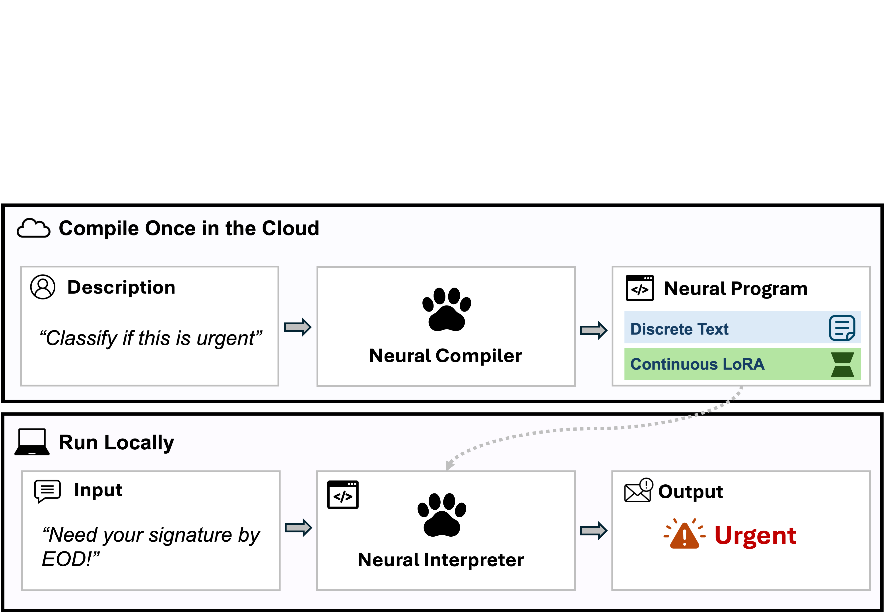
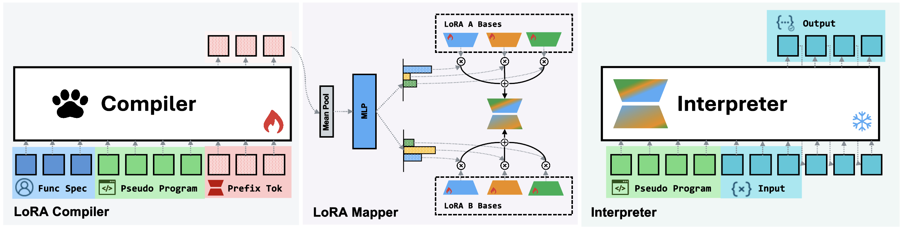
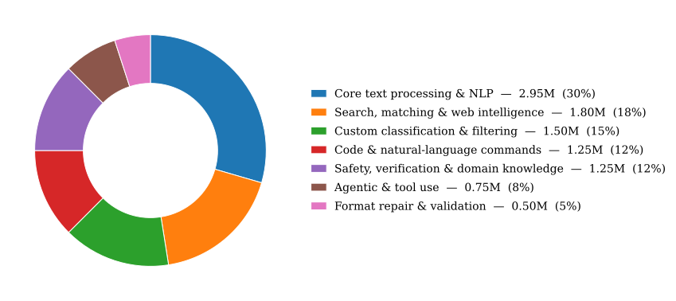
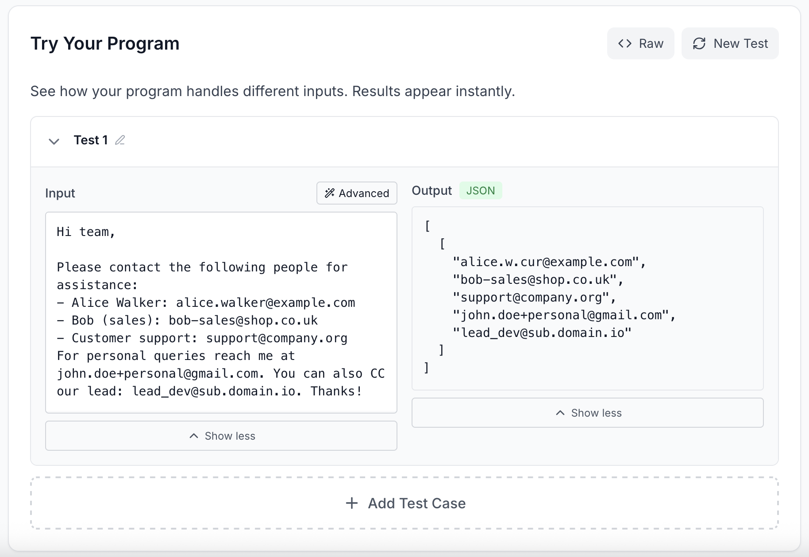
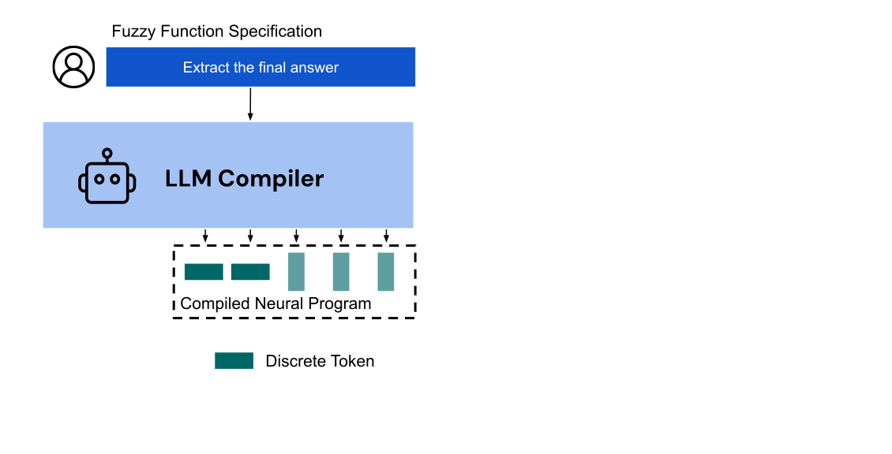
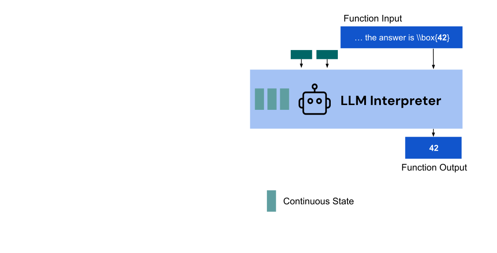
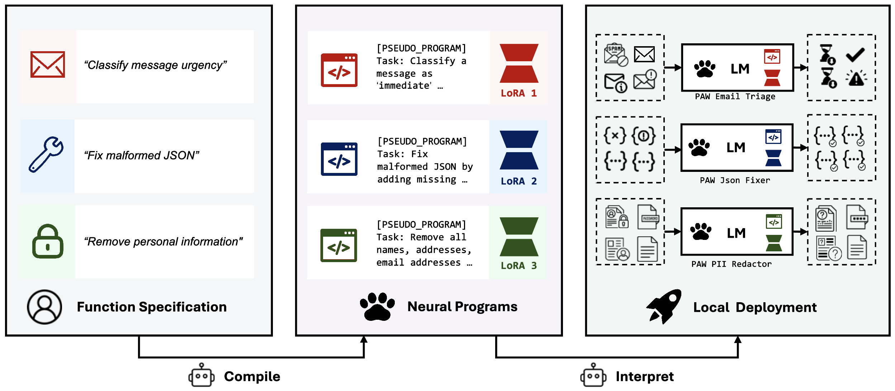

Program-as-Weights: A Programming Paradigm for Fuzzy Functions
Abstract摘要
Many everyday programming tasks resist clean rule-based implementation, such as alerting on important log lines, repairing malformed JSON, or ranking search results by intent, and are increasingly outsourced to large language model APIs at the cost of locality, reproducibility, and price. We propose fuzzy-function programming: compiling such a function from a natural-language specification into a compact, locally-executable neural artifact. We instantiate this paradigm with Program-as-Weights (PAW), in which a 4B compiler trained on FuzzyBench, a 10M-example dataset we release, emits parameter-efficient adapters for a frozen, lightweight interpreter. A 0.6B Qwen3 interpreter executing PAW programs matches the performance of direct prompting of Qwen3-32B, while using roughly one fiftieth of the inference memory and running at 30 tokens/s on a MacBook M3. PAW reframes the foundation model from a per-input problem solver into a tool builder: invoked once per function definition, it produces a small reusable artifact whose subsequent calls per function application are cheap and offline.
许多日常编程任务难以通过基于规则的方式简洁地实现，例如针对重要日志行发出告警、修复格式错误的 JSON，或根据意图对搜索结果排序。这些任务越来越多地被外包给大语言模型 API，代价则是牺牲本地性、可复现性并增加成本。我们提出模糊函数编程：将此类函数的自然语言规约编译为紧凑、可在本地执行的神经网络制品。我们通过 Program-as-Weights（PAW）实现这一范式，其中，一个在我们发布的含有 10M 个样本的数据集 FuzzyBench 上训练的 4B 编译器，为冻结的轻量级解释器生成参数高效适配器。执行 PAW 程序的 0.6B Qwen3 解释器，其性能与直接提示 Qwen3-32B 相当，而推理内存用量约为后者的五十分之一，并且在 MacBook M3 上的运行速度达到 30 tokens/s。PAW 将基础模型从针对每个输入的问题求解器重新定位为工具构建器：每定义一个函数仅调用一次基础模型，即可生成一个小型、可复用的制品，此后每次应用该函数时的调用成本低廉，且可离线进行。
1 Introduction1 引言
Programming has historically been about writing explicit rules in a formal language designed for the purpose, a programming language. A function is defined by code, and the computer executes it deterministically. For many tasks, this paradigm works beautifully: sorting numbers, processing structured data, computing matrix products. Yet a large class of real-world functions resists precise specification. Consider, for instance, filtering a computer log to alert someone only on the log lines or messages that matter, repairing malformed JSON, or ranking search results by intent. Even apparently “simple” tasks, such as writing a regular expression to parse text with many edge cases, prove brittle. Beyond underspecification, real-world inputs are noisy: typos and format drift routinely break hand-written rules and regexes. These are fuzzy functions (Rubio Manzano, 2012): problems that humans find intuitive but that cannot be fully captured by crisp symbolic rules.
传统上，编程是指使用专为此目的设计的形式语言，即编程语言，来编写显式规则。函数由代码定义，计算机以确定性的方式执行这些代码。对于许多任务，这一范式表现出色，例如对数字排序、处理结构化数据以及计算矩阵乘积。然而，有一大类现实世界中的函数难以精确规定。例如，过滤计算机日志，仅在出现重要的日志行或消息时向用户发出告警；修复格式错误的 JSON；或根据意图对搜索结果排序。即使是看似“简单”的任务，例如编写正则表达式来解析包含大量边界情况的文本，其实现也往往十分脆弱。除了规约不充分之外，现实世界的输入还存在噪声：拼写错误和格式漂移经常导致手写规则和正则表达式失效。这些就是模糊函数 (Rubio Manzano, 2012)：人类凭直觉即可理解，却无法用明确的符号规则完整刻画的问题。
Today, developers frequently outsource such fuzziness to LLM APIs. It is increasingly common to find codebases where a remote LLM is called (e.g., gpt(‘‘extract answer’’, text)) to implement functions that are otherwise intractable to program. This approach is undeniably convenient, but it is costly, fragile, undermines reproducibility because providers may silently update their models (Kim et al., 2023), and prevents software from being self-contained.
如今，开发者经常将此类模糊性处理外包给 LLM API。在代码库中，通过调用远程 LLM（例如，gpt(‘‘extract answer’’, text)）来实现原本难以编程实现的函数，这种做法正变得越来越普遍。这种方法无疑很方便，但成本高昂、脆弱，并且由于服务提供商可能在不告知用户的情况下更新其模型 (Kim et al., 2023)，会损害可复现性，同时使软件无法保持自包含。
We propose a different paradigm with three steps: the developer describes the function in natural language; a neural compiler turns that description into a small neural binary; and a frozen, lightweight neural interpreter, installed once on the user’s device, runs that binary just like a user-defined function (Figure 1). We call this paradigm Program-as-Weights (PAW). Any sufficiently expressive parameter-efficient module (PEFT) emitted by a hypernetwork can serve as the program form; we instantiate two, prefix-tuning and text-to-LoRA, and find LoRA better, with future PEFTs possibly better still.
我们提出一种包含三个步骤的新范式：开发者用自然语言描述函数；神经编译器将该描述转换为一个小型神经二进制文件；随后，一个只需在用户设备上安装一次的冻结轻量级神经解释器，便可像运行用户定义的函数一样运行该二进制文件（图 1）。我们将这一范式称为 Program-as-Weights（PAW）。由超网络生成的任何具有足够表达能力的参数高效模块（PEFT）都可以作为程序形式；我们实现了其中两种，即 prefix-tuning 和 text-to-LoRA，并发现 LoRA 的效果更好，而未来的 PEFT 可能会取得更好的效果。

Figure 1: Overview of the Program-as-Weights paradigm. Top: compile once in the cloud. A natural-language description of a fuzzy function (here, “classify if this is urgent”) is fed to a neural compiler, which produces a neural program. Bottom: run locally. A small frozen neural interpreter loads the compiled program and runs the user’s input (“Need your signature by EOD!”) to produce the output (“urgent”). The compiled program is a single file that can be cached, version-controlled, and called offline like any other library function.
图 1：Program-as-Weights 范式概览。上：在云端编译一次。将模糊函数的自然语言描述（此处为“判断这是否紧急”）输入神经编译器，由其生成神经程序。下：在本地运行。一个小型的冻结神经解释器加载编译后的程序，并处理用户输入（“今天结束前需要您签字！”），生成输出（“紧急”）。编译后的程序是一个单独的文件，可以缓存、纳入版本控制，并像其他库函数一样离线调用。
A PAW program has two halves. The first is a pseudo-program in natural language, a restatement of the user’s specification. The second is a PEFT module that re-tunes the frozen interpreter for this one task: in our precursor system this was a prefix-tuning KV cache; in our current system it is a LoRA generated by the compiler from its own hidden states and injected into the interpreter. The discrete half shields the interpreter from typos and ambiguity in the original specification; the continuous half supplies the fine-grained behavioral control that text alone cannot.
PAW 程序包含两个部分。第一部分是以自然语言表述的伪程序，即对用户规约的重述。第二部分是一个 PEFT 模块，用于针对这一特定任务重新调整冻结的解释器：在我们的前期系统中，它是一个用于 prefix-tuning 的 KV 缓存；在当前系统中，它是编译器根据自身隐藏状态生成并注入解释器的 LoRA。离散部分使解释器免受原始规约中拼写错误和歧义的影响；连续部分则提供仅靠文本无法实现的细粒度行为控制。
The compile pipeline has two stages, both running 4B Qwen3 models. The first stage is a pseudo compiler, an off-the-shelf model we never train: prompted with a small task-rewriting template, it turns the user’s spec into a clean pseudo-program of a paraphrased description plus a handful of input-output examples. The second stage is a LoRA compiler that we train: it reads the spec and the pseudo-program and emits the LoRA. We train the LoRA compiler on FuzzyBench, a 10M-example dataset we release with this paper, built incrementally across 29 thematic versions covering more than 800 categories of fuzzy text tasks such as classification, format conversion, parsing, fuzzy matching, natural-language commands, agentic tool use, and many more.
编译流水线包含两个阶段，均运行 4B Qwen3 模型。第一阶段是伪编译器，即一个我们从不训练的现成模型：在一个简短的任务改写模板的提示下，它将用户的规格说明转换为清晰的伪程序，其中包含改述后的描述和少量输入输出示例。第二阶段是我们训练的 LoRA 编译器：它读取规格说明和伪程序，并生成 LoRA。我们使用 FuzzyBench 训练 LoRA 编译器；这是我们随本文发布的一个包含 10M 个示例的数据集，经过 29 个主题版本逐步构建，涵盖分类、格式转换、解析、模糊匹配、自然语言命令、智能体工具使用等 800 多类模糊文本任务。
The result is a small, fast, and accurate system. A Qwen3-0.6B interpreter executing PAW programs outperforms direct prompting of Qwen3-32B (73.78% vs. 68.70% exact match) at roughly one fiftieth the inference memory. Quantized, the same system runs at 30 tokens per second on a MacBook M3 from a $\sim$430 MB GGUF base shared across functions plus a 23 MB per-program LoRA adapter; a smaller GPT-2 path runs entirely client-side in the browser via WebAssembly.
由此得到的是一个小巧、快速且准确的系统。执行 PAW 程序的 Qwen3-0.6B 解释器，其性能优于直接提示 Qwen3-32B（精确匹配率为 73.78%，后者为 68.70%），而推理内存占用约为后者的五十分之一。量化后，同一系统基于一个各函数共享的 $\sim$430 MB GGUF 基础模型，以及每个程序各自的一个 23 MB LoRA 适配器，可在 MacBook M3 上以每秒 30 tokens 的速度运行；规模更小的 GPT-2 路径则通过 WebAssembly 完全在浏览器客户端运行。
We see Program-as-Weights as a concrete step toward a small-model future (Belcak et al., 2025), in which the heavy lifting happens once at compile time and the day-to-day work of running software happens locally. We illustrate its applications in five case studies: output triage (event-driven log monitoring), custom classification (intent-based site navigation), fuzzy search (semantic search reranking), agent preprocessing (a tool-calling pipeline that scores 93% on ToolCall-15), and creative generation (a multilingual word-guessing game). Each is the kind of fuzzy task that resists symbolic implementation but does not need an API call to a 30B-parameter model on every input. We additionally show the abstraction’s modality generality: replacing only the compiler with a vision-language model while keeping the same interpreter runs PAW programs on image-conditioned fuzzy tasks. Our code can be found at https://github.com/programasweights and a public demo is available at https://programasweights.com.
我们认为，Program-as-Weights 是迈向小模型未来的具体一步 (Belcak et al., 2025)；在这样的未来中，繁重的工作在编译时一次性完成，而日常的软件运行工作则在本地进行。我们通过五个案例研究展示其应用：输出分流（事件驱动的日志监控）、自定义分类（基于意图的网站导航）、模糊搜索（语义搜索重排序）、智能体预处理（在 ToolCall-15 上得分为 93% 的工具调用流水线），以及创意生成（多语言猜词游戏）。这些应用都属于难以通过符号方式实现、但又无需针对每个输入都通过 API 调用一个 30B 参数模型的模糊任务。我们还展示了这一抽象在模态上的通用性：仅将编译器替换为视觉语言模型，同时保持解释器不变，即可在以图像为条件的模糊任务上运行 PAW 程序。我们的代码见 https://github.com/programasweights，公开演示见 https://programasweights.com。
2 Programs as Weights2 程序即权重
Let $f:X\to Y$ denote a function whose behavior is more naturally specified through natural language, examples, or constraints than through symbolic code, a fuzzy function. Instead of repeatedly invoking an LLM to approximate $f$, we propose to compile a neural program that specializes a fixed model to implement $f$.
令 $f:X\to Y$ 表示这样一个函数：与符号代码相比，通过自然语言、示例或约束来规定其行为更为自然，我们将其称为模糊函数。我们提出编译一个神经程序，使固定模型专门用于实现 $f$，而非反复调用 LLM 来近似 $f$。
Formally, let $s$ denote a user specification, expressed in natural language and optionally accompanied by example input-output pairs $(x,y)$. A neural Compiler maps $s$ to a program $p$. A small fixed neural Interpreter executes $p$ on inputs $x\in X$ to produce outputs $\hat{y}\in Y$:
形式上，令 $s$ 表示用户规格说明，以自然语言表达，并可选择附带输入输出示例对 $(x,y)$。神经编译器将 $s$ 映射为程序 $p$。一个小型、固定的神经解释器在输入 $x\in X$ 上执行 $p$，产生输出 $\hat{y}\in Y$：
This division mirrors classical programming, where a compiler translates source code into an executable that is later run by a runtime. The crucial difference is that the executable here is a learned parameter blob, and the runtime is a neural network. The interpreter does not need to be retrained: introducing a new fuzzy function only requires compiling a new program $p$.
这种分工与经典编程相对应：编译器将源代码转换为可执行文件，随后由运行时执行。关键区别在于，这里的可执行文件是一个学习得到的参数数据块，而运行时是一个神经网络。解释器无需重新训练：引入新的模糊函数只需编译一个新程序 $p$。
Hybrid programs.混合程序。
For conceptual simplicity, $p$ may be viewed as a single continuous object. In our concrete instantiation, however, $p$ is a hybrid of a discrete and a continuous component:
为简化概念，可以将 $p$ 视为单一的连续对象。然而，在我们的具体实现中，$p$ 由离散分量和连续分量混合构成：
The discrete component $p_{\text{discrete}}$ is a variable-length sequence of tokens that acts as a self-contained “pseudo-program” presented to the interpreter as part of its input. The continuous component $p_{\text{continuous}}$ can be implemented using any PEFT method, such as a LoRA injected into the interpreter.
离散分量 $p_{\text{discrete}}$ 是一个变长的 token 序列，充当一个自包含的“伪程序”，作为输入的一部分提供给解释器。连续分量 $p_{\text{continuous}}$ 可使用任意 PEFT 方法实现，例如注入解释器的 LoRA。
Why “program”?为何称为“程序”？
This framing matters because it determines how the artifact is used. A compiled PAW program is a single file ($\sim$23 MB at $Q4\_0$ for a 0.6B interpreter, plus a one-time shared base) that can be saved, version-controlled, distributed via package managers, and called from Python or JavaScript with a two-line API. PAW programs are objects of the same kind as Python modules: they have a name and a version, but their behavior is encoded in weights rather than in source code. The compiler is the part that does the heavy lifting; the interpreter is a fixed runtime, comparable to a CPU or a byte-code interpreter in conventional software stacks.
这一概念框架很重要，因为它决定了所生成产物的使用方式。编译后的 PAW 程序是一个单独的文件（对于 0.6B 解释器，在 $Q4\_0$ 下约为 $\sim$23 MB，另加一份仅需提供一次的共享基础模型），可以保存、进行版本控制、通过包管理器分发，并通过两行 API 从 Python 或 JavaScript 中调用。PAW 程序与 Python 模块属于同一类对象：它们具有名称和版本，但其行为编码在权重中，而非源代码中。编译器承担繁重的工作；解释器则是固定的运行时，类似于传统软件栈中的 CPU 或字节码解释器。
3 The Compiler–Interpreter System3 编译器–解释器系统
3.1 Compiler–interpreter abstraction3.1 编译器–解释器抽象
The PAW pipeline has three components, none of which depend on the specific PEFT chosen for the program form. A pseudo compiler $C_{p}$ reads the spec $s$ and produces a discrete pseudo-program $p_{\text{discrete}}$. A PEFT compiler $C_{\text{PEFT}}$ reads the spec together with $p_{\text{discrete}}$ and emits a small parameter-efficient module $p_{\text{continuous}}$ from its hidden states. The frozen interpreter ingests $p_{\text{continuous}}$ at runtime — by attaching it to the appropriate target modules and running the user’s input $x$ through it — to produce the output $\hat{y}$. We instantiate the PEFT module in two ways: a prefix-tuning KV cache (Section 3.3) and a LoRA (Section 3.2), with the latter being our current best.
PAW 流水线包含三个组件，它们均不依赖于为程序形式选定的具体 PEFT 方法。伪编译器 $C_{p}$ 读取规格说明 $s$，并生成离散伪程序 $p_{\text{discrete}}$。PEFT 编译器 $C_{\text{PEFT}}$ 读取规格说明和 $p_{\text{discrete}}$，并根据其隐藏状态生成一个小型参数高效模块 $p_{\text{continuous}}$。冻结的解释器在运行时接收 $p_{\text{continuous}}$，将其挂载到相应的目标模块，并使用户输入 $x$ 通过该模块，从而生成输出 $\hat{y}$。我们以两种方式实例化 PEFT 模块：前缀调优 KV 缓存（第 3.3 节）和 LoRA（第 3.2 节），其中后者是我们目前效果最好的方案。
Pseudo compiler.伪编译器。
The pseudo compiler $C_{p}$ is an off-the-shelf Qwen3-4B-Instruct-2507 model that we never train. Given a specification $s$, we prompt $C_{p}$ with a small task-rewriting template (full text in Appendix C) that asks for a clean restatement of the task plus a handful of representative input-output examples. The output is the discrete component $p_{\text{discrete}}$ of the program. The pseudo compiler is shared by both PEFT instantiations below.
伪编译器 $C_{p}$ 是一个现成的 Qwen3-4B-Instruct-2507 模型，我们从不对其进行训练。给定规格说明 $s$，我们使用一个简短的任务改写模板（全文见附录 C）来提示 $C_{p}$，要求其清晰地重述任务，并给出少量具有代表性的输入输出示例。其输出构成程序的离散组件 $p_{\text{discrete}}$。下述两种 PEFT 实例共用该伪编译器。
3.2 Text-to-LoRA: our current best3.2 Text-to-LoRA：我们目前效果最好的方案
LoRA compiler.LoRA 编译器。
The LoRA compiler $C_{L}$ is a second 4B Qwen3 model, initialized from the same checkpoint as $C_{p}$ but trained (Section 4). Given the spec $s$ and the pseudo-program $p_{\text{discrete}}$ produced by $C_{p}$, $C_{L}$ runs a single forward pass on the concatenation $[s\mid p_{\text{discrete}}\mid\texttt{EOS}\mid\tau_{1},\dots,\tau_{T}]$, where $\tau_{1{:}T}$ is a fixed sequence of $T=64$ learned “prefix” tokens. We extract prefix-position hidden states from $L$ compiler layers spaced uniformly by depth ratio (one per interpreter layer), and stack them into the tensor $H\in\mathbb{R}^{L\times T\times d_{\text{teacher}}}$ that is fed to the LoRA mapper (Figure 2).
LoRA 编译器 $C_{L}$ 是另一个 4B Qwen3 模型，它从与 $C_{p}$ 相同的检查点初始化，但经过了训练（第 4 节）。给定规格说明 $s$ 和由 $C_{p}$ 生成的伪程序 $p_{\text{discrete}}$，$C_{L}$ 对拼接序列 $[s\mid p_{\text{discrete}}\mid\texttt{EOS}\mid\tau_{1},\dots,\tau_{T}]$ 执行一次前向传播，其中 $\tau_{1{:}T}$ 是由 $T=64$ 个可学习的“前缀”词元组成的固定序列。我们从按相对深度均匀间隔选取的 $L$ 个编译器层中提取前缀位置的隐藏状态（每个解释器层对应一个编译器层），并将其堆叠为张量 $H\in\mathbb{R}^{L\times T\times d_{\text{teacher}}}$，输入 LoRA 映射器（图 2）。
LoRA mapper.LoRA 映射器。
The LoRA compiler’s hidden states $H$ are converted into per-example LoRA weights by a small parameter-efficient module, the LoRA mapper. For each interpreter target-module type $m$ (attention $q\!/\!k\!/\!v\!/\!o$ and MLP $\text{gate}/\text{up}/\text{down}$), the mapper maintains shared learnable bases
LoRA 编译器的隐藏状态 $H$ 通过一个小型参数高效模块，即 LoRA 映射器，转换为每个样例各自的 LoRA 权重。对于解释器中的每一种目标模块类型 $m$（注意力 $q\!/\!k\!/\!v\!/\!o$ 和 MLP $\text{gate}/\text{up}/\text{down}$），映射器维护一组共享的可学习基
These hidden states are mean-pooled over both the $L$ depth-aligned layers and the $T$ prefix positions, $\bar{h}=\tfrac{1}{LT}\sum_{l,t}H_{l,t}$, passed through a shallow MLP trunk $\phi$, and projected into mixing coefficients $\alpha^{A,B}_{l,m,n}\in\mathbb{R}$ for each layer $l$, module type $m$, and basis index $n$, via a single linear head. The LoRA at layer $l$ and module $m$ is
这些隐藏状态同时在 $L$ 个深度对齐的层和 $T$ 个前缀位置上进行均值池化，得到 $\bar{h}=\tfrac{1}{LT}\sum_{l,t}H_{l,t}$，随后通过浅层 MLP 主干 $\phi$，并经由单个线性头投影为每个层 $l$、模块类型 $m$ 和基索引 $n$ 对应的混合系数 $\alpha^{A,B}_{l,m,n}\in\mathbb{R}$。层 $l$、模块 $m$ 处的 LoRA 为
We use rank $r=64$ and $N=64$ shared bases per module type, applied to all layers and module types. Per fuzzy function, this injects approximately 38.5M LoRA parameters into the interpreter.
我们采用秩 $r=64$，并为每种模块类型使用 $N=64$ 个共享基，这一设置应用于所有层和模块类型。对于每个模糊函数，这会向解释器注入约 38.5M 个 LoRA 参数。
Interpreter.解释器。
The interpreter is a frozen language model. To execute a PAW program on input $x$, we (i) attach the LoRA in eq. 3 to the appropriate target modules, (ii) prepend $p_{\text{discrete}}$ to the input $x$, and (iii) generate the output autoregressively. Because the interpreter is frozen and the LoRA hot-swappable, a single device-resident interpreter can serve unboundedly many PAW programs; Figure 19 illustrates this “one runtime, many programs” picture for three example specifications.
解释器是一个冻结的语言模型。为在输入 $x$ 上执行 PAW 程序，我们 (i) 将式 3 中的 LoRA 挂载到相应的目标模块，(ii) 将 $p_{\text{discrete}}$ 前置于输入 $x$，并 (iii) 以自回归方式生成输出。由于解释器被冻结，且 LoRA 支持热切换，驻留在设备上的单个解释器即可为任意多个 PAW 程序提供服务；图 19 通过三个规格说明示例展示了这种“一个运行时，多个程序”的图景。

Figure 2: Text-to-LoRA instantiation of PAW (Section 3.2). Left. The trained LoRA compiler reads the function specification, the pseudo-program produced by an off-the-shelf prompted pseudo compiler $C_{p}$ (not depicted), and a fixed sequence of learned prefix tokens; it emits prefix-position hidden states $H$. Middle. The LoRA mapper mean-pools $H$, passes it through an MLP, and projects into mixing coefficients that compose LoRA matrices $(A^{\text{ex}},B^{\text{ex}})$ over shared learnable bases (eq. 3). Right. The frozen interpreter ingests $p_{\text{discrete}}$ prepended to the user input $x$, with the LoRA hot-attached, and generates the output autoregressively. The same pipeline holds for the prefix-tuning precursor (Section 3.3, with architecture in Figure 18); only the mapping from compiler hidden states to PEFT module changes (LoRA $\to$ KV-cache mapper).
图 2：PAW 的 Text-to-LoRA 实例（第 3.2 节）。左：训练后的 LoRA 编译器读取函数规格说明、由现成的伪编译器 $C_{p}$ 经提示生成的伪程序（图中未示出），以及由可学习前缀词元组成的固定序列；随后输出前缀位置的隐藏状态 $H$。中：LoRA 映射器对 $H$ 进行均值池化，使其通过一个 MLP，并将其投影为混合系数，利用这些系数对共享的可学习基进行组合，构成 LoRA 矩阵 $(A^{\text{ex}},B^{\text{ex}})$（式 3）。右：冻结的解释器接收前置于用户输入 $x$ 的 $p_{\text{discrete}}$，同时以热挂载方式接入 LoRA，并以自回归方式生成输出。同一流水线也适用于前缀调优的先期实例（第 3.3 节，架构见图 18）；只有从编译器隐藏状态到 PEFT 模块的映射发生变化（LoRA $\to$ KV 缓存映射器）。
3.3 Prefix-tuning: a precursor instantiation3.3 前缀调优：一种先期实例
Prefix compiler.前缀编译器。
Our precursor system replaced the LoRA mapper with a prefix-tuning mapper. The prefix compiler $C_{P}$ is a second 4B Qwen3 model trained the same way as $C_{L}$, with the only difference being how its prefix-position hidden states are consumed. Given $[s\mid p_{\text{discrete}}\mid\texttt{EOS}\mid\tau_{1:T}]$, $C_{P}$ produces hidden states $H\in\mathbb{R}^{L\times T\times d_{\text{teacher}}}$ at the same $L$ depth-aligned layers as in Section 3.2. Instead of pooling and projecting into LoRA weights, a small linear mapper $\psi$ projects these hidden states position-wise into KV pairs $(K^{\text{ex}}_{l,t},V^{\text{ex}}_{l,t})\in\mathbb{R}^{2\times d_{\text{int}}}$ that are prepended to the interpreter’s attention KV cache at every layer, in the manner of standard prefix-tuning (Li and Liang, 2021) (see Figure 18 in the appendix for an architecture diagram). The interpreter then runs $x$ through its frozen attention with the additional $T$ prefix-position keys and values visible to every query.
我们的前身系统将 LoRA 映射器替换为前缀微调映射器。前缀编译器 $C_{P}$ 是第二个 4B Qwen3 模型，其训练方式与 $C_{L}$ 相同，唯一的区别在于如何使用其前缀位置的隐藏状态。给定 $[s\mid p_{\text{discrete}}\mid\texttt{EOS}\mid\tau_{1:T}]$，$C_{P}$ 在与第 3.2 节相同的 $L$ 个深度对齐层上生成隐藏状态 $H\in\mathbb{R}^{L\times T\times d_{\text{teacher}}}$。这些隐藏状态不经过池化并投影为 LoRA 权重，而是由一个小型线性映射器 $\psi$ 按位置投影为 KV 对 $(K^{\text{ex}}_{l,t},V^{\text{ex}}_{l,t})\in\mathbb{R}^{2\times d_{\text{int}}}$，再按照标准前缀微调 (Li and Liang, 2021) 的方式，将其添加到解释器每一层注意力 KV 缓存的前端（架构图见附录中的图 18）。随后，解释器通过其冻结的注意力机制处理 $x$，其中每个查询都可以访问额外的 $T$ 个前缀位置的键和值。
Both methods solve the task.两种方法均能完成该任务。
At a controlled comparison scale (same amount of training compute), the prefix-tuning instantiation reaches 50.4% exact match on FuzzyBench, while the LoRA instantiation reaches 56.5% at $r{=}18$ ($r{=}18$ matches the prefix-tuning program size) and 65.7% at $r{=}64$ (Table 1). Both outperform the no-compiler prompting baseline (9.8%). LoRA is the stronger PEFT and is the instantiation we scale to the full training data in subsequent experiments.
在受控的比较规模下（训练计算量相同），前缀微调实例在 FuzzyBench 上的精确匹配率达到 50.4%，而 LoRA 实例在 $r{=}18$ 时达到 56.5%（$r{=}18$ 时的程序大小与前缀微调相同），在 $r{=}64$ 时达到 65.7%（表 1）。两者均优于不使用编译器的提示基线（9.8%）。LoRA 是效果更好的 PEFT 方法，因此在后续实验中，我们将该实例扩展至使用全部训练数据。
Table 1: Two PEFT instantiations. Both methods outperform the prompting baseline.
表 1：两种 PEFT 实例。两种方法均优于提示基线。
| Method 方法 | Accuracy 准确率 |
| Prompting 提示 | 0.098 |
| Prefix Tuning 前缀微调 | 0.504 |
| Text-to-LoRA, $r{=}18$ Text-to-LoRA，$r{=}18$ | 0.565 |
| Text-to-LoRA, $r{=}64$ (default) Text-to-LoRA，$r{=}64$（默认） | 0.657 |
4 Training4 训练
Only the PEFT compiler is trained. The pseudo compiler $C_{p}$ is held off-the-shelf and frozen; the interpreter is also frozen. The PEFT compiler is trained to produce a PEFT adapter that, when injected into the frozen interpreter alongside a fixed pseudo-program, maximizes the likelihood of the target output. With both endpoints frozen, this reduces to a single supervised objective. We concentrate below on the LoRA instantiation; the prefix-tuning precursor (Section 3.3) was trained with the same SFT recipe described below, substituting the prefix-tuning mapper for the LoRA mapper.
仅训练 PEFT 编译器。伪编译器 $C_{p}$ 采用现成模型并保持冻结；解释器也保持冻结。PEFT 编译器经过训练，生成一个 PEFT 适配器，使其与固定的伪程序一同注入冻结的解释器时，能够最大化目标输出的似然。在两端均冻结的情况下，训练归结为单一的监督目标。下文重点介绍 LoRA 实例；前缀微调前身系统（第 3.3 节）采用下文所述的相同 SFT 方案进行训练，只是将 LoRA 映射器替换为前缀微调映射器。
Objective.目标函数。
For each training triple $(s,x,y)$, we look up a pre-generated pseudo-program $p_{\text{discrete}}=C_{p}(s)$, run a forward pass through $C_{L}$ on $[s\mid p_{\text{discrete}}\mid\texttt{EOS}\mid\tau_{1{:}T}]$ to obtain prefix-position hidden states, pass those through the LoRA mapper to obtain $p_{\text{LoRA}}$, and inject the result into the interpreter. The loss is the negative mean-token log-likelihood of the target $y$ under the frozen interpreter:
对于每个训练三元组 $(s,x,y)$，我们查找预先生成的伪程序 $p_{\text{discrete}}=C_{p}(s)$，以 $[s\mid p_{\text{discrete}}\mid\texttt{EOS}\mid\tau_{1{:}T}]$ 为输入，通过 $C_{L}$ 执行一次前向传播，获得前缀位置的隐藏状态，再将这些隐藏状态传入 LoRA 映射器以获得 $p_{\text{LoRA}}$，并将结果注入解释器。损失为冻结的解释器下目标 $y$ 的逐词元平均对数似然的负值：
where $\theta$ is the parameters of $C_{L}$ and the LoRA mapper, and $\phi$ are the interpreter parameters. The gradient flows back through the frozen interpreter into the LoRA mapper and from there into $C_{L}$’s hidden states. Full hyperparameters and compute setup are in Appendix G.
其中，$\theta$ 为 $C_{L}$ 和 LoRA 映射器的参数，$\phi$ 为解释器的参数。梯度通过冻结的解释器反向传播至 LoRA 映射器，再由此传播至 $C_{L}$ 的隐藏状态。完整的超参数和计算配置见附录 G。
5 FuzzyBench: A 10M-Example Dataset of Fuzzy Functions5 FuzzyBench：包含 10M 个样例的模糊函数数据集
A central obstacle to training PAW-style methods is the lack of a public dataset for “compile a fuzzy function from a specification.” We construct FuzzyBench, a 10M-example dataset in which every example is a triple $(s,x,y)$ of (specification, input, target output), generated using gpt-5.2.
训练 PAW 类方法的一个主要障碍是，缺少用于“根据规范编译模糊函数”的公开数据集。我们构建了 FuzzyBench，这是一个包含 10M 个样例的数据集，其中每个样例都是由 gpt-5.2 生成的（规范、输入、目标输出）三元组 $(s,x,y)$。
Construction.构建。
We use a two-stage pipeline. In the first stage, we prompt gpt-5.2 to generate natural-language specifications of fuzzy functions. Each prompting call produces eight specifications, and we run repeated calls under different category constraints to cover the breadth of fuzzy tasks developers actually encounter. In the second stage, for each specification, we prompt gpt-5.2 again to generate eight input/output pairs. Specifications are split 80/10/10 by spec into train/validation/test, so that test specifications are entirely unseen at training time. For evaluation, we construct a verified test set on which an independent strong model (gpt-5-mini) and gpt-5.2 agree on the output, removing examples where the target itself is ambiguous. Full prompts are in Appendix B.
我们采用两阶段流程。在第一阶段，我们通过提示让 gpt-5.2 生成模糊函数的自然语言规范。每次提示调用生成八条规范，我们在不同的类别约束下反复调用，以广泛覆盖开发者实际遇到的模糊任务。在第二阶段，对于每条规范，我们再次通过提示让 gpt-5.2 生成八组输入/输出对。我们按规范以 80/10/10 的比例划分训练集、验证集和测试集，确保测试规范在训练时完全不可见。为进行评估，我们构建了一个经过验证的测试集，其中独立的强模型 (gpt-5-mini) 与 gpt-5.2 对输出达成一致，从而剔除目标本身存在歧义的样例。完整提示见附录 B。
Thematic coverage.主题覆盖范围。
FuzzyBench is built incrementally over 29 versions, each adding 100K-500K examples covering a new family of fuzzy tasks. Figure 3 groups the resulting 10M examples into seven high-level task families that span what developers actually encounter in fuzzy logic: from raw text processing and parsing to agentic tool use, web intelligence, code-and-command generation, and safety/verification. The full per-version timeline (29 entries; the first version alone establishes 277 base categories, and the final dataset covers more than 800 sub-categories) is in Appendix F.
FuzzyBench 经过 29 个版本逐步构建而成，每个版本新增 100K-500K 个样例，覆盖一类新的模糊任务。图 3 将最终得到的 10M 个样例归为七大任务类别，涵盖开发者在模糊逻辑中实际遇到的任务：从原始文本处理和解析，到智能体工具使用、网络情报、代码与命令生成，以及安全与验证。各版本的完整时间线（共 29 项；仅首个版本就确立了 277 个基础类别，最终数据集覆盖超过 800 个子类别）见附录 F。

Figure 3: FuzzyBench-10M task-family distribution. 29 incremental thematic versions are mapped to 7 high-level families. “Core text processing & NLP” is the largest family because the v1 base layer (2.5M examples; 277 base categories) covers parsing, classification, NER, coreference, and sentiment; the remaining 7.5M examples spread across the other six families.
图 3：FuzzyBench-10M 的任务族分布。29 个增量主题版本被映射到 7 个高层任务族。“核心文本处理与 NLP”是最大的任务族，因为 v1 基础层（2.5M 个样例；277 个基础类别）涵盖解析、分类、NER、共指消解和情感分析；其余 7.5M 个样例分布在其他六个任务族中。
Noise variants.噪声变体。
For robustness evaluation, we additionally release noise-perturbed versions of the test set along eight axes: typos, grammar errors, ambiguity, formatting drift, “all noise” (combined), terse phrasing, casual phrasing, and paraphrase. Each axis comes in three intensity levels (light, medium, heavy). Section 8 reports robustness numbers.
为评估鲁棒性，我们还发布了沿八个维度施加噪声扰动的测试集版本：拼写错误、语法错误、歧义、格式漂移、“全部噪声”（组合）、简略表述、口语化表述和改述。每个维度均设有三个强度等级（轻度、中度、重度）。第 8 节报告鲁棒性结果。
Empirical ceiling.经验上限。
The data-generating model itself, gpt-5.2, achieves 96.09%; gpt-5-mini achieves 91.87%. These bound how high any compiled function trained on this data can reach.
数据生成模型 gpt-5.2 本身达到 96.09%；gpt-5-mini 达到 91.87%。这些结果限定了基于该数据训练的任何编译函数所能达到的性能上限。
6 Main Results6 主要结果
We compare PAW against three families of baselines, all evaluated on the same test sets as PAW so that any compute or data-generation differences are absorbed in the comparison.
我们将 PAW 与三类基线进行比较，所有基线均在与 PAW 相同的测试集上评估，以便在比较中一并考虑计算或数据生成方面的任何差异。
Baselines.基线。
(i) Direct prompting of open-weight LMs (Qwen3 0.6B, 4B, 8B, 14B, 32B; OLMo3-7B; gpt-oss-20B), and of two API models that bound the empirical ceiling (gpt-5-mini and gpt-5.2). (ii) Symbolic code generation: ALCHEmist’s LM-to-code pipeline (Huang et al., 2024b), where a strong LM writes Python code to solve the fuzzy task and the code is executed at inference. (iii) Standard adaptation of the same 0.6B base: full fine-tuning across 1-4 epochs, and fixed (non-compiler-generated) LoRAs at ranks $r\in\{18,64,128\}$.
(i) 对开放权重的语言模型（Qwen3 0.6B、4B、8B、14B、32B；OLMo3-7B；gpt-oss-20B），以及用于界定经验上限的两个 API 模型（gpt-5-mini 和 gpt-5.2）直接进行提示。(ii) 符号代码生成：ALCHEmist 的语言模型到代码流水线 (Huang et al., 2024b)，其中，由一个强大的语言模型编写 Python 代码来解决模糊任务，并在推理时执行该代码。(iii) 对同一 0.6B 基础模型进行标准适配：进行 1-4 个轮次的全量微调，以及采用秩为 $r\in\{18,64,128\}$ 的固定 LoRA（非编译器生成）。
Main result.主要结果。
Table 2 summarizes the main numbers. A 0.6B-parameter interpreter executing PAW programs achieves 73.78% exact match on FuzzyBench, outperforming prompting Qwen3-32B (68.70%) while using approximately $50\times$ less inference memory ($\sim$1.2 GB at bf16 vs. $\sim$60 GB).
表 2 汇总了主要结果。执行 PAW 程序的 0.6B 参数解释器在 FuzzyBench 上达到 73.78% 的精确匹配率，超过了对 Qwen3-32B 进行提示的结果（68.70%），同时推理内存用量约减少 $50\times$（bf16 下为 $\sim$1.2 GB，而后者为 $\sim$60 GB）。
Table 2: Main results. FuzzyBench uses exact match accuracy on the verified test set. Following the WRENCH benchmark setup of ALCHEmist (Huang et al., 2024b), SMS uses F1 and the rest use Acc. Contained indicates the program is self-contained and executable without internet access. PS is per-program shipping size; for prompting baselines this is the prompt/spec size, and for PAW it is the deployed PEFT adapter ($Q4\_0$ quantized for Qwen3 0.6B and Qwen3.5 0.8B; fp32 for GPT-2). †: numbers taken from Huang et al. (2024b), which uses 10-sample majority voting; the reimplementation row uses single-sample for fairness. ∗: zero F1 due to zero recall.
表 2：主要结果。FuzzyBench 采用经核验测试集上的精确匹配准确率。遵循 ALCHEmist (Huang et al., 2024b) 的 WRENCH 基准设置，SMS 使用 F1，其余使用准确率。自包含表示程序是自包含的，且无需互联网访问即可执行。PS 表示每个程序的分发大小；对于提示基线，它是提示/规格的大小，对于 PAW，它是部署的 PEFT 适配器大小（Qwen3 0.6B 和 Qwen3.5 0.8B 采用 $Q4\_0$ 量化；GPT-2 采用 fp32）。†：数值取自 Huang et al. (2024b)，其使用 10 个样本的多数投票；为保证公平，重新实现一行使用单样本。∗：由于召回率为零，F1 为零。
| Contained 自包含 | Interp. Size 解释器规模 | FuzzyBench | YouTube | SMS | Yelp | IMDB | ||||||
| Method 方法 | Acc 准确率 | PS | Acc 准确率 | PS | F1 | PS | Acc 准确率 | PS | Acc 准确率 | PS | ||
| gpt-5.2 (API) | $\times$ | – | 96.09% | 0.73 KB | 95.20% | 0.95 KB | 97.06% | 1.03 KB | 98.55% | 1.69 KB | 95.60% | 2.25 KB |
| gpt-5-mini (API) | $\times$ | – | 91.87% | 0.73 KB | 93.60% | 0.95 KB | 91.03% | 1.03 KB | 98.13% | 1.69 KB | 94.96% | 2.25 KB |
| Local LM (Qwen3 0.6B) 本地语言模型（Qwen3 0.6B） | $\checkmark$ | 0.6B | 9.84% | 0.73 KB | 52.80% | 0.95 KB | 0.00%∗ | 1.03 KB | 89.55% | 1.69 KB | 66.88% | 2.25 KB |
| Local LM (Qwen3 4B) 本地语言模型（Qwen3 4B） | $\checkmark$ | 4B | 49.63% | 0.73 KB | 90.80% | 0.95 KB | 92.54% | 1.03 KB | 97.53% | 1.69 KB | 93.76% | 2.25 KB |
| Local LM (Qwen3 8B) 本地语言模型（Qwen3 8B） | $\checkmark$ | 8B | 52.15% | 0.73 KB | 94.40% | 0.95 KB | 91.55% | 1.03 KB | 97.95% | 1.69 KB | 94.52% | 2.25 KB |
| Local LM (Qwen3 14B) 本地语言模型（Qwen3 14B） | $\checkmark$ | 14B | 63.96% | 0.73 KB | 93.20% | 0.95 KB | 92.75% | 1.03 KB | 97.74% | 1.69 KB | 92.64% | 2.25 KB |
| Local LM (Qwen3 32B) 本地语言模型（Qwen3 32B） | $\checkmark$ | 32B | 68.70% | 0.73 KB | 93.60% | 0.95 KB | 89.04% | 1.03 KB | 98.11% | 1.69 KB | 94.64% | 2.25 KB |
| Local LM (OLMo3 7B) 本地语言模型（OLMo3 7B） | $\checkmark$ | 7B | 39.84% | 0.73 KB | 90.00% | 0.95 KB | 90.14% | 1.03 KB | 97.66% | 1.69 KB | 93.28% | 2.25 KB |
| Local LM (gpt-oss-20B) 本地语言模型（gpt-oss-20B） | $\checkmark$ | 20B | 85.45% | 0.73 KB | 91.60% | 0.95 KB | 89.05% | 1.03 KB | 97.42% | 1.69 KB | 92.08% | 2.25 KB |
| LM$\to$Code (Huang et al., 2024b) LM$\to$Code (Huang et al., 2024b) | $\checkmark$ | 29 MB | – | – | 89.10%† | – | 90.00%† | – | 57.50%† | – | 66.20%† | – |
| LM$\to$Code (Reimplementation) LM$\to$Code（重新实现） | $\checkmark$ | 29 MB | 35.81% | 0.08 KB | 70.46% | 0.09 KB | 86.41% | 0.06 KB | 50.35% | 0.05 KB | 73.92% | 0.08 KB |
| PAW (Qwen3 0.6B) | $\checkmark$ | 0.6B | 73.78% | 23 MB | 90.40% | 23 MB | 80.77% | 23 MB | 95.82% | 23 MB | 90.64% | 23 MB |
| PAW (Qwen3.5 0.8B) | $\checkmark$ | 0.8B | 67.29% | 16 MB | 88.40% | 16 MB | 84.55% | 16 MB | 94.05% | 16 MB | 82.68% | 16 MB |
| PAW (GPT-2 124M) | $\checkmark$ | 124M | 54.39% | 38 MB | 93.60% | 38 MB | 77.50% | 38 MB | 93.16% | 38 MB | 82.12% | 38 MB |
Cross-interpreter scaling.跨解释器的规模扩展。
Among three interpreters GPT-2 124M, Qwen3 0.6B, and Qwen3.5 0.8B, Qwen3 0.6B is the strongest interpreter; the hybrid 0.8B is slightly weaker. GPT-2 124M, despite having only 1/5 the parameters of Qwen3 0.6B and no instruction tuning, still achieves 54%, suggesting that the compiler-generated LoRA can encode usable task adaptations even into very small, weakly-capable bases.
在 GPT-2 124M、Qwen3 0.6B 和 Qwen3.5 0.8B 三个解释器中，Qwen3 0.6B 的表现最强；采用混合架构的 0.8B 模型略弱。尽管 GPT-2 124M 的参数量仅为 Qwen3 0.6B 的 1/5，且未经过指令微调，它仍达到 54%，这表明编译器生成的 LoRA 即使在规模很小、能力较弱的基础模型中，也能编码可用的任务适配。
Multimodal generalization without changing the interpreter.不改变解释器的多模态泛化。
The compiler-interpreter abstraction extends to image-conditioned fuzzy functions without changing the interpreter. We swap the text-only Qwen3-4B-Instruct compiler for the same-family Qwen3-VL-4B compiler (Bai et al., 2025), keep the same Qwen3 0.6B interpreter, and reuse the same LoRA mapper. Image conditioning is fully encoded in the PEFT module emitted by the VL compiler, so the small text interpreter never sees pixels. Table 3 reports six image-conditioned tasks: three CoSyn-400K diagram-understanding tasks (Chemical, Circuit, Music) (Yang et al., 2025; Deitke et al., 2024), the structured-output Im2LaTeX-100K (Deng et al., 2017) and Im2SMILES-20K (Deng et al., 2023) tasks, and the open-ended visual question answering TextVQA (Singh et al., 2019); full prompts are in Appendix D.
编译器与解释器的抽象可扩展至以图像为条件的模糊函数，而无需改变解释器。我们将纯文本的 Qwen3-4B-Instruct 编译器替换为同系列的 Qwen3-VL-4B 编译器 (Bai et al., 2025)，保留相同的 Qwen3 0.6B 解释器，并复用相同的 LoRA 映射器。图像条件信息完全编码在视觉语言编译器输出的 PEFT 模块中，因此小型文本解释器从不接触像素。表 3 报告了六项以图像为条件的任务：三项 CoSyn-400K 图示理解任务（Chemical、Circuit、Music）(Yang et al., 2025; Deitke et al., 2024)、结构化输出任务 Im2LaTeX-100K (Deng et al., 2017) 和 Im2SMILES-20K (Deng et al., 2023)，以及开放式视觉问答任务 TextVQA (Singh et al., 2019)；完整提示见附录 D。
PAW (LoRA) outperforms all VLM baselines (up to 4B parameters) on the three CoSyn diagram tasks (Circuit 0.274 vs. 0.196 best baseline; Chemical 0.414 vs. 0.258; Music 0.552 vs. 0.470) at $\sim$0.6B interpreter size. On the long-form structured generation task Im2LaTeX, PAW (LoRA) is weaker than its prefix-tuning precursor (0.181 vs. 0.391); a discrete-pseudo-only ablation in Section D.1 shows the gap arises because the long input/output examples in the pseudo-program crowd the small interpreter’s context budget on long-form tasks.
在解释器规模为 $\sim$0.6B 时，PAW (LoRA) 在三项 CoSyn 图示任务上均优于所有 VLM 基线（参数量最高为 4B）（Circuit 为 0.274，最佳基线为 0.196；Chemical 为 0.414，最佳基线为 0.258；Music 为 0.552，最佳基线为 0.470）。在长文本结构化生成任务 Im2LaTeX 上，PAW (LoRA) 弱于其采用前缀微调的前身（0.181，而后者为 0.391）；第 D.1 节中仅保留离散伪程序的消融实验表明，这一差距源于伪程序中的长输入/输出样例在长文本任务上挤占了小型解释器的上下文预算。
Table 3: Image-conditioned fuzzy functions. The PAW rows use the same Qwen3 0.6B and Qwen 3.5 0.8B interpreters as in Table 2 (only the compiler is swapped, from Qwen3-4B-Instruct to Qwen3-VL-4B).
表 3：以图像为条件的模糊函数。PAW 各行使用与表 2 相同的 Qwen3 0.6B 和 Qwen 3.5 0.8B 解释器（仅将编译器从 Qwen3-4B-Instruct 替换为 Qwen3-VL-4B）。
| Method 方法 | Interp. Size 解释器规模 | Circuit | Chemical | Music | Im2SMILES | Im2LaTeX | TextVQA |
| AndesVL 0.6B (AndesVL Team, OPPO AI Center, 2025) | 0.6B | 0.183 | 0.214 | 0.448 | 0.000 | 0.435 | 0.718 |
| Qwen3-VL 2B-Instruct (Bai et al., 2025) Qwen3-VL 2B-Instruct (Bai et al., 2025) | 2B | 0.186 | 0.258 | 0.470 | 0.016 | 0.408 | 0.836 |
| Qwen3-VL 4B-Instruct (Bai et al., 2025) Qwen3-VL 4B-Instruct (Bai et al., 2025) | 4B | 0.196 | 0.221 | 0.450 | 0.044 | 0.399 | 0.822 |
| PAW prefix-tuning (Qwen3 0.6B) PAW 前缀微调（Qwen3 0.6B） | 0.6B | 0.241 | 0.365 | 0.525 | 0.175 | 0.391 | 0.612 |
| PAW LoRA (Qwen3 0.6B) | 0.6B | 0.274 | 0.414 | 0.552 | 0.203 | 0.181 | 0.721 |
| PAW LoRA (Qwen3.5 0.8B) | 0.8B | 0.284 | 0.438 | 0.573 | 0.285 | 0.204 | 0.755 |
7 Ablations7 消融实验
Architectural variants of the LoRA mapper.LoRA 映射器的架构变体。
We tried several variants of the LoRA mapper that, on paper, are strictly more expressive than the default (mean-pool over prefix tokens, shallow trunk, shared bases). Each made things worse. Table 5 reports accuracy across these variants. The simplest design of mean-pooling the prefix-token hidden states into one vector, running a single residual MLP, and projecting to mixing coefficients over a shared basis set, is the strongest. We do not have a clean theoretical explanation for this; we report the finding so that future work need not rediscover it.
我们尝试了 LoRA 映射器的若干变体，从理论上看，它们的表达能力均严格强于默认设计（对前缀词元进行均值池化、浅层主干网络、共享基）。每种变体的效果都更差。表 5 报告了这些变体的准确率。最简单的设计表现最佳：将前缀词元的隐藏状态通过均值池化汇聚为一个向量，经由单个残差 MLP 处理，再投影为共享基集合上的混合系数。我们尚无法对此给出清晰的理论解释；报告这一发现，是为了使后续研究无需重复探索。
Table 4: Architectural variants of the LoRA mapper. “More expressive” design choices that we expected to help all underperformed the simple default.
表 4：LoRA 映射器的架构变体。我们预期会有所帮助的“表达能力更强”的设计选择，其表现均不及简单的默认设计。
| Mapper variant 映射器变体 | Accuracy 准确率 |
| Default ($r{=}64$, $N{=}64$, shared bases) 默认设计（$r{=}64$，$N{=}64$，共享基） | 0.6223 |
| Per-position aggregation 按位置聚合 | 0.5598 |
| Per-position $+$ per-layer bases 按位置聚合 $+$ 各层独立的基 | 0.5559 |
| Per-layer bases (only) 各层独立的基（仅此一项） | 0.6028 |
| LoRA $+$ prefix-tuning (both pathways) LoRA $+$ 前缀微调（两条路径） | 0.6033 |
Compiler vs. no compiler.有无编译器的比较。
Table 5 compares PAW with three same-base “no compiler” baselines on FuzzyBench: full fine-tuning of the 0.6B Qwen3 interpreter, and per-task fixed LoRAs at three ranks. The same data, the same base model, the same training budget; only the compiler is removed. PAW exceeds full fine-tuning by 15.4 percentage points and the strongest fixed LoRA by 21.7 points, showing that the gain comes specifically from compiler-generated LoRA.
表 5 在 FuzzyBench 上比较了 PAW 与采用相同基座的三种“无编译器”基线：对 0.6B Qwen3 解释器进行全量微调，以及为每个任务分别训练的三种秩的固定 LoRA。数据相同、基座模型相同、训练预算相同；唯一的变化是移除了编译器。PAW 比全量微调高出 15.4 个百分点，比表现最强的固定 LoRA 高出 21.7 个百分点，表明性能提升确实来自编译器生成的 LoRA。
Other ablations.其他消融实验。
Additional ablations on model architecture decisions can be found at Appendix H.
关于模型架构决策的更多消融实验见附录 H。
8 Robustness to Noisy Specifications8 对含噪规格说明的鲁棒性
Real specifications written by developers are noisy: they contain typos, ambiguity, and grammar errors. We evaluate PAW on noise-perturbed versions of the test_clean specifications across seven axes (typos, grammar, ambiguity, formatting, all-noise combined, terse, paraphrase).
开发者编写的真实规格说明含有噪声：其中存在拼写错误、歧义和语法错误。我们沿七个维度（拼写错误、语法、歧义、格式、全部噪声组合、简略表述、改写）对 test_clean 规格说明施加噪声扰动，并在这些版本上评估 PAW。
Table 6 reports the robustness results. PAW degrades only slightly under heavy noise — but why? We hypothesise that this robustness is mediated by the discrete pseudo-program: the 4B compiler converts the noisy spec into a clean restatement before the small interpreter ever sees it. To test the hypothesis, we trained a variant that bypasses the pseudo-program and feeds the raw spec $s$ directly to the interpreter. The result (Table 7) confirms the hypothesis. On clean inputs, feeding the pseudo-program rather than the raw spec is only 1.6 points better. On heavy-typo specifications, however, the gap widens to 4.5 points. The compiler, a 4B LM whose entire job is to read fuzzy specifications and emit a clean restatement, effectively denoises the input that the small interpreter sees, which is why PAW degrades little when the original specification is corrupted.
表 6 报告了鲁棒性结果。PAW 在强噪声下性能仅略有下降——但原因何在？我们假设，这种鲁棒性由离散伪程序介导：在小型解释器接收规格说明之前，4B 编译器先将含噪规格说明转换为清晰的重述。为检验这一假设，我们训练了一个绕过伪程序、将原始规格说明 $s$ 直接输入解释器的变体。结果（表 7）证实了这一假设。在干净输入上，输入伪程序仅比输入原始规格说明高出 1.6 个百分点。然而，在包含大量拼写错误的规格说明上，这一差距扩大至 4.5 个百分点。编译器是一个 4B LM，其全部任务就是读取模糊规格说明并输出清晰的重述，它有效地对小型解释器接收的输入进行了去噪，这就是原始规格说明受损时 PAW 性能下降幅度很小的原因。
Table 6: Robustness to noise. The 8-axis variants modify the spec but leave the input unchanged. PAW degrades only slightly even under combined heavy noise.
表 6：对噪声的鲁棒性。8 个维度的变体修改规格说明，但保持输入不变。即使在组合强噪声下，PAW 的性能也仅略有下降。
| clean 干净 | typos 拼写错误 | grammar 语法 | ambiguity 歧义 | formatting 格式 | all-noise 全部噪声 | terse 简略表述 | paraphrase 改写 | |
| PAW Qwen3 0.6B (e2) | 0.6692 | 0.6621 | 0.6731 | 0.6511 | 0.6526 | 0.6326 | 0.6499 | 0.6614 |
| drop from clean 相较于干净条件的降幅 | – | $-0.7\%$ | $+0.4\%$ | $-1.8\%$ | $-1.7\%$ | $-3.7\%$ | $-1.9\%$ | $-0.8\%$ |
Table 7: The pseudo-program protects the interpreter from noisy specifications. On heavy-typo specifications, feeding raw spec is 4.5 points worse than feeding the pseudo-program to the interpreter.
表 7：伪程序保护解释器免受含噪规格说明的影响。在包含大量拼写错误的规格说明上，向解释器输入原始规格说明比输入伪程序低 4.5 个百分点。
| Interpreter input 解释器输入 | Accuracy (clean) 准确率（干净） | Accuracy (heavy typos) 准确率（大量拼写错误） |
| Pseudo-program (default) 伪程序（默认） | 0.6443 | 0.6108 |
| Raw spec 原始规格说明 | 0.6285 | 0.5662 |
9 Local Execution9 本地执行
Beyond benchmarks, to make PAW practical to use, we built a developer interface.
除基准评测外，为使 PAW 能够在实际中使用，我们构建了一个开发者接口。
Developer interface.开发者接口。
A PAW program is a single file that can be downloaded, cached, and called via a small Python or JavaScript API. Figure 4 shows a complete minimal Python example: paw.compile(prompt) sends a specification to a compiler service and returns a serializable program object; paw.function(id_or_path) loads a compiled program and exposes it as a Python callable. After the first download, all execution happens locally with no external API calls.
一个 PAW 程序是一个可下载、缓存并通过小型 Python 或 JavaScript API 调用的单一文件。图 4 展示了一个完整的最小 Python 示例：paw.compile(prompt) 将规格说明发送至编译器服务，并返回一个可序列化的程序对象；paw.function(id_or_path) 加载已编译的程序，并将其暴露为 Python 可调用对象。首次下载后，所有执行均在本地进行，无需调用外部 API。
Listing 1: Compile a fuzzy function
代码清单 1：编译一个模糊函数
import programasweights as paw
# (1) Describe the fuzzy function
spec = """Classify if this email
requires immediate attention.
""".strip()
# (2) Compile to a neural program
program = paw.compile(spec, \
slug="email-triage")
import programasweights as paw
# (3) Load the compiled program
fn = paw.function("email-triage")
# (4) Call it like a function
print(fn("Thesis defense moved "
"to 3pm; need your "
"signature today."))
# -> "immediate"Quantization without measurable accuracy loss.无可测准确率损失的量化。
On-device execution requires a small footprint. We quantize both the shared interpreter base and each per-program LoRA adapter to GGUF formats compatible with llama.cpp (Gerganov and llama.cpp contributors, 2023). Table 8 reports our quantization findings on the 0.6B Qwen3 interpreter, validated at a 4096-example test subset: a 4-bit base ($Q4\_K\_M$, $\sim$484 MB) plus a $Q4\_0$ LoRA adapter ($\sim$23 MB per program) loses only 1.3 points relative to bf16, and a $Q6\_K$ base plus $Q4\_0$ adapter is statistically indistinguishable from bf16.
设备端执行要求较小的资源占用。我们将共享解释器基座和每个程序的 LoRA 适配器均量化为与 llama.cpp 兼容的 GGUF 格式 (Gerganov and llama.cpp contributors, 2023)。表 8 报告了我们在 0.6B Qwen3 解释器上的量化结果，并在包含 4096 个样本的测试子集上进行了验证：4-bit 基座（$Q4\_K\_M$，$\sim$484 MB）加上 $Q4\_0$ LoRA 适配器（每个程序 $\sim$23 MB）相较于 bf16 仅下降 1.3 个百分点，而 $Q6\_K$ 基座加上 $Q4\_0$ 适配器与 bf16 在统计上无显著差异。
Table 8: Quantization on the 0.6B Qwen3 interpreter. A $Q6\_K$ base + $Q4\_0$ LoRA is indistinguishable from bf16 within noise; $Q4\_K\_M$ loses 1.3 points but cuts total disk to $\sim$507 MB.
表 8：0.6B Qwen3 解释器的量化。在噪声范围内，$Q6\_K$ 基座 + $Q4\_0$ LoRA 与 bf16 无可区分的差异；$Q4\_K\_M$ 下降了 1.3 个百分点，但将总磁盘占用降至 $\sim$507 MB。
| Configuration 配置 | Base size 基座大小 | Adapter size 适配器大小 | Accuracy 准确率 |
| PyTorch bf16 (no quantization) PyTorch bf16（无量化） | 1515 MB | – | 0.6580 |
| fp16 base + fp32 LoRA fp16 基座 + fp32 LoRA | 1509 MB | 162 MB | 0.6594 |
| $Q8\_0$ base + $Q4\_0$ LoRA $Q8\_0$ 基座 + $Q4\_0$ LoRA | 805 MB | 23 MB | 0.6567 |
| $Q6\_K$ base + $Q4\_0$ LoRA $Q6\_K$ 基座 + $Q4\_0$ LoRA | 623 MB | 23 MB | 0.6575 |
| $Q5\_K\_M$ base + $Q4\_0$ LoRA $Q5\_K\_M$ 基座 + $Q4\_0$ LoRA | 551 MB | 23 MB | 0.6477 |
| $Q4\_K\_M$ base + $Q4\_0$ LoRA $Q4\_K\_M$ 基座 + $Q4\_0$ LoRA | 484 MB | 23 MB | 0.6453 |
| IQ4_XS base + $Q4\_0$ LoRA IQ4_XS 基座 + $Q4\_0$ LoRA | 430 MB | 23 MB | 0.6462 |
Latency on a MacBook M3.MacBook M3 上的延迟。
On a MacBook M3 with Metal acceleration, the $Q5\_K\_M$ base + $Q4\_0$ adapter runs at 31.6 tokens/s with a 0.48 s cold load. Full per-quant tables for GPT-2 124M and Qwen3.5 0.8B are in Appendix K.
在启用 Metal 加速的 MacBook M3 上，$Q5\_K\_M$ 基座 + $Q4\_0$ 适配器的运行速度为 31.6 tokens/s，冷加载时间为 0.48 s。GPT-2 124M 和 Qwen3.5 0.8B 在各量化配置下的完整表格见附录 K。
Case studies.案例研究。
We applied PAW to five use cases. Event-driven log monitoring replaces the naive wait-based terminal watching in Cursor with a local classifier that fires only on the lines that matter. Intent-based site navigation provides a natural-language quick-find for a website without an LLM API call per request. Semantic search reranking adds intent-aware fuzzy search to an existing keyword index, again without putting an LLM in the request path. For tool calling, a 10-PAW-function pipeline scores 93% on ToolCall-15, capturing tool-routing behavior usually reserved for much larger models. The multilingual word-guessing game (Alien-Taboo) is a fuzzy interactive game in which each player turn is served by a 0.6B PAW interpreter on a small server, with one PAW program per language; the LLM is invoked only at compile time, which is what makes a game of this kind economical to host. Full details are in Appendix M.
我们将 PAW 应用于五个用例。事件驱动的日志监控使用本地分类器，取代了 Cursor 中基于等待的朴素终端监视方式，该分类器仅在出现相关日志行时触发。基于意图的网站导航为网站提供自然语言快速查找功能，无需为每次请求调用 LLM API。语义搜索重排序在现有关键词索引的基础上增添了感知意图的模糊搜索功能，同样无需在请求处理路径中引入 LLM。在工具调用方面，由 10 个 PAW 函数组成的流水线在 ToolCall-15 上取得了 93% 的得分，掌握了通常只有规模大得多的模型才具备的工具路由行为。多语言猜词游戏（Alien-Taboo）是一款模糊交互式游戏，其中每位玩家每一回合的请求均由小型服务器上的一个 0.6B PAW 解释器处理，每种语言对应一个 PAW 程序；LLM 仅在编译时调用，这使得此类游戏能够以经济的成本部署运营。完整细节见附录 M。
10 Related Work10 相关工作
Hypernetworks.超网络。
Hypernetworks (Ha et al., 2017) generate the weights of a target network from a small embedding, originally for vision and language modeling; subsequent work used them for continual learning (von Oswald et al., 2020), multi-task NLP via shared hypernetworks across tasks and layers (Karimi Mahabadi et al., 2021b), and as parameter-efficient adapters in their own right (Karimi Mahabadi et al., 2021a). The text-conditioned subfamily relevant to PAW maps a natural-language task description to PEFT parameters in a single forward pass: Hypter (Ye and Ren, 2021) generates BART-Large adapters from descriptions; HINT (Ivison et al., 2023) generates prefix-and-adapter modules from instructions to amortize per-query encoding cost; HyperTuning (Phang et al., 2023) introduces a T5-based hypermodel that emits soft prefixes or LoRA parameters from few-shot examples; Text-to-LoRA (Charakorn et al., 2025) maps textual task descriptions to LoRAs distilled from pre-trained adapters; Generative Adapter (Chen et al., 2025) produces task-specific adapters from a single forward pass over context; HyperSteer (Sun et al., 2025) extends the idea to activation steering; Gist (Mu et al., 2023) compresses prompts into a few prefix tokens via attention-mask training; and MEND (Li et al., 2024) distills demonstrations into vectors via two-stage meta-distillation. The most recent work closest to PAW maps natural-language contexts to LoRA in a single forward pass: SHINE (Liu et al., 2026) as a scalable in-context hypernetwork; HypeLoRA (Trojan and Gębala, 2026) for calibrated PEFT generation with structural coupling across layers; Doc-to-LoRA (Charakorn et al., 2026), which meta-learns to internalise a document into a LoRA adapter that the base model can then query without re-consuming the context; and Latent Context Compilation (Li et al., 2026), which explicitly frames a LoRA module as a compiler that distills long context into compact portable buffer tokens. LoRA composition methods such as LoraHub (Huang et al., 2024a) share basis sets across tasks, parallel to our shared-basis LoRA mapper. Compared with these, PAW (a) emits a hybrid (discrete pseudo-program $+$ continuous PEFT) program rather than a continuous-only adapter; (b) is trained on programmer-style fuzzy-function specifications (FuzzyBench-10M’s 800+ task families) rather than on QA contexts or distilled per-task adapters; and (c) targets a developer-facing API where the compiled program is a versioned, distributable software artifact.
超网络 (Ha et al., 2017) 根据一个小型嵌入生成目标网络的权重，最初用于视觉和语言建模；后续工作将其用于持续学习 (von Oswald et al., 2020)、通过跨任务和跨层共享超网络实现多任务 NLP (Karimi Mahabadi et al., 2021b)，以及直接将其作为参数高效适配器 (Karimi Mahabadi et al., 2021a)。与 PAW 相关的文本条件化子类通过单次前向传播，将自然语言任务描述映射为 PEFT 参数：Hypter (Ye and Ren, 2021) 根据描述生成 BART-Large 适配器；HINT (Ivison et al., 2023) 根据指令生成前缀与适配器模块，以摊销每次查询的编码成本；HyperTuning (Phang et al., 2023) 引入了一个基于 T5 的超模型，根据小样本示例生成软前缀或 LoRA 参数；Text-to-LoRA (Charakorn et al., 2025) 将文本任务描述映射为从预训练适配器中蒸馏得到的 LoRA；Generative Adapter (Chen et al., 2025) 通过对上下文进行单次前向传播，生成任务专用适配器；HyperSteer (Sun et al., 2025) 将这一思想扩展到激活转向；Gist (Mu et al., 2023) 通过注意力掩码训练，将提示压缩为少量前缀词元；MEND (Li et al., 2024) 则通过两阶段元蒸馏，将示范蒸馏为向量。最新工作中，与 PAW 最接近的方法通过单次前向传播将自然语言上下文映射为 LoRA：SHINE (Liu et al., 2026) 是一种可扩展的上下文超网络；HypeLoRA (Trojan and Gębala, 2026) 通过跨层结构耦合生成经过校准的 PEFT；Doc-to-LoRA (Charakorn et al., 2026) 通过元学习将文档内化到 LoRA 适配器中，使基座模型随后无需重新读取上下文即可查询该文档；Latent Context Compilation (Li et al., 2026) 则明确将 LoRA 模块视为一种编译器，将长上下文蒸馏为紧凑、可移植的缓冲词元。LoraHub (Huang et al., 2024a) 等 LoRA 组合方法在任务之间共享基集，这与我们的共享基 LoRA 映射器相似。与这些方法相比，PAW (a) 生成混合式（离散伪程序 $+$ 连续 PEFT）程序，而非仅包含连续参数的适配器；(b) 使用面向程序员的模糊函数规约（FuzzyBench-10M 的 800+ 个任务族）进行训练，而非使用 QA 上下文或经蒸馏得到的各任务适配器；(c) 面向开发者 API，其中编译后的程序是一种可进行版本管理、可分发的软件制品。
Parameter-efficient fine-tuning.参数高效微调。
The PEFT building blocks our compiler emits are well-studied. Adapters (Houlsby et al., 2019; Pfeiffer et al., 2021) insert small trainable bottlenecks into a frozen backbone; prefix-tuning (Li and Liang, 2021) prepends learned key–value pairs to attention; prompt tuning (Lester et al., 2021; Liu et al., 2022b) learns soft input embeddings; LoRA (Hu et al., 2022) learns low-rank decomposed updates to the linear projections of attention and MLP layers; AdaLoRA (Zhang et al., 2023) dynamically allocates rank budgets across layers; DoRA (Liu et al., 2024) decomposes pre-trained weights into magnitude and direction and applies LoRA only to the direction component, closing the gap to full fine-tuning; QLoRA (Dettmers et al., 2023) combines quantization with LoRA for memory-efficient fine-tuning. PAW differs in that the PEFT module is generated per example by a separate compiler from a textual specification, rather than learned per task by gradient descent on the target task. T-Few (Liu et al., 2022a) argues that PEFT can outperform in-context learning at lower deployment cost — a related framing, with the difference that T-Few learns its PEFT per task while we generate it from a description.
我们的编译器所生成的 PEFT 构建模块已得到充分研究。适配器 (Houlsby et al., 2019; Pfeiffer et al., 2021) 在冻结的骨干网络中插入小型可训练瓶颈模块；前缀微调 (Li and Liang, 2021) 在注意力中前置可学习的键值对；提示微调 (Lester et al., 2021; Liu et al., 2022b) 学习软输入嵌入；LoRA (Hu et al., 2022) 学习注意力层和 MLP 层中线性投影的低秩分解更新；AdaLoRA (Zhang et al., 2023) 在各层之间动态分配秩预算；DoRA (Liu et al., 2024) 将预训练权重分解为幅值和方向，并仅对方向分量应用 LoRA，从而缩小与全量微调的差距；QLoRA (Dettmers et al., 2023) 将量化与 LoRA 相结合，实现内存高效的微调。PAW 的不同之处在于，其 PEFT 模块由一个独立编译器根据文本规约为每个示例生成，而不是针对每个任务，通过在目标任务上进行梯度下降来学习。T-Few (Liu et al., 2022a) 认为，PEFT 能够以更低的部署成本获得优于上下文学习的性能——这一思路与我们相关，区别在于 T-Few 针对每个任务学习其 PEFT，而我们根据描述生成 PEFT。
Synthetic instruction-data generation.合成指令数据生成。
FuzzyBench-10M is generated by an LLM (gpt-5.2) and follows the methodological precedent of LLM-generated instruction datasets. Self-Instruct (Wang et al., 2023) prompts a strong LLM to generate diverse instruction-input-output triples that are then used to fine-tune a smaller model. Unnatural Instructions (Honovich et al., 2023) similarly generates instructions automatically. Textbooks Are All You Need (Gunasekar et al., 2023) argues for synthetic-textbook-style training data for small-model pre-training. Magpie (Xu et al., 2025) self-synthesises 4M alignment instances from an aligned LLM with no seed prompts. FuzzyBench-10M differs in that the data-generating pipeline is task-class-specific (29 thematic versions covering categories developers actually encounter, rather than open-ended prompts), and we explicitly construct a verified test split (Section 5) where two strong LLMs must agree on the output to filter ambiguous targets. Recent small-model technical reports (Abdin et al., 2024; Gemma Team, 2025) similarly emphasise high-quality synthetic data as the primary lever for closing capability gaps with frontier models at small scales.
FuzzyBench-10M 由一个 LLM（gpt-5.2）生成，并沿用了利用 LLM 生成指令数据集的方法先例。Self-Instruct (Wang et al., 2023) 通过提示一个强大的 LLM 生成多样化的指令-输入-输出三元组，随后将这些三元组用于微调较小的模型。Unnatural Instructions (Honovich et al., 2023) 同样自动生成指令。Textbooks Are All You Need (Gunasekar et al., 2023) 主张使用合成的教科书风格训练数据对小型模型进行预训练。Magpie (Xu et al., 2025) 无需种子提示，即可从一个经过对齐的 LLM 自行合成 4M 个对齐样本。FuzzyBench-10M 的不同之处在于，其数据生成流水线针对特定任务类别设计（包含 29 个主题版本，覆盖开发者实际遇到的类别，而非开放式提示），并且我们专门构建了一个经过验证的测试集划分（第 5 节），要求两个强大的 LLM 对输出达成一致，以过滤掉存在歧义的目标输出。近期的小型模型技术报告 (Abdin et al., 2024; Gemma Team, 2025) 同样强调，高质量的合成数据是在较小模型规模下缩小与前沿模型能力差距的主要手段。
Model distillation.模型蒸馏。
ALCHEmist (Huang et al., 2024b) distills labelling logic from LLMs into Python programs that run on a standard interpreter. PAW shares the motivation of amortizing LLM usage but compiles directly into neural weights instead of textual code, which lets it implement fuzzy functions that resist symbolic encoding. Binder (Cheng et al., 2023) translates a task input into a SQL/Python program with embedded LM API calls; PAW differs in that the program is the weights themselves, not a piece of text containing API calls. Distilling Step-by-Step (Hsieh et al., 2023) distills LLM reasoning into smaller fine-tuned models with rationales as auxiliary supervision; PAW shares the goal of replacing large-LM inference with small-model inference, but achieves it via per-task compile rather than per-task fine-tuning.
ALCHEmist (Huang et al., 2024b) 将 LLM 的标注逻辑蒸馏为可在标准解释器上运行的 Python 程序。PAW 同样旨在摊薄 LLM 的使用成本，但它直接编译为神经网络权重，而非文本代码，因此能够实现难以用符号编码的模糊函数。Binder (Cheng et al., 2023) 将任务输入转换为嵌入了 LM API 调用的 SQL/Python 程序；PAW 的不同之处在于，程序就是权重本身，而非一段包含 API 调用的文本。Distilling Step-by-Step (Hsieh et al., 2023) 以推理依据作为辅助监督，将 LLM 的推理能力蒸馏到经过微调的较小模型中；PAW 同样以小型模型推理替代大型 LM 推理为目标，但通过针对每个任务进行编译来实现，而非针对每个任务进行微调。
Neural programs.神经程序。
Representing programs in neural networks is a long-standing direction (Graves et al., 2014; Reed and de Freitas, 2016), with some work compiling formal code into network weights (Weiss et al., 2021; Gruau et al., 1995). PAW differs in its training and use model: programs are not learned per task but produced on demand by a single compiler, then executed on a fixed interpreter and freely shared. A recent trend argues for replacing API LLMs with small, locally executed models (Belcak et al., 2025; Abdin et al., 2024; Gemma Team, 2025); PAW is one realization. The crucial difference between PAW and “just use a small LLM” is that the small model’s behaviour is configured per fuzzy function by a compiler rather than baked into a fine-tune. Practical on-device deployment of small models has been driven by post-training quantization (GPTQ (Frantar et al., 2023), AWQ (Lin et al., 2024), QLoRA’s quantization-aware finetuning (Dettmers et al., 2023)) and lightweight inference runtimes (llama.cpp (Gerganov and llama.cpp contributors, 2023), in-browser via wllama (wllama contributors, 2024)); we use these directly. Most recent small-LM technical reports (Abdin et al., 2024; Gemma Team, 2025) also adopt LoRA-flavoured PEFT for multimodal extensions and downstream adaptation, complementing the developer-API direction PAW pursues.
在神经网络中表示程序是一个由来已久的研究方向 (Graves et al., 2014; Reed and de Freitas, 2016)，其中一些工作将形式化代码编译为网络权重 (Weiss et al., 2021; Gruau et al., 1995)。PAW 的不同之处在于其训练和使用模式：程序并非针对每个任务学习得到，而是由单个编译器按需生成，随后在固定的解释器上执行，并可自由共享。近期的一种趋势主张用在本地执行的小型模型替代通过 API 调用的 LLM (Belcak et al., 2025; Abdin et al., 2024; Gemma Team, 2025)；PAW 是其中一种实现方式。PAW 与“直接使用一个小型 LLM”的关键区别在于，小型模型的行为由编译器针对每个模糊函数进行配置，而非固化在微调结果中。小型模型在设备端的实际部署得益于训练后量化（GPTQ (Frantar et al., 2023)、AWQ (Lin et al., 2024)、QLoRA 的量化感知微调 (Dettmers et al., 2023)）和轻量级推理运行时（llama.cpp (Gerganov and llama.cpp contributors, 2023)，以及通过 wllama 在浏览器内运行 (wllama contributors, 2024)）；我们直接使用了这些技术。近期大多数小型 LM 技术报告 (Abdin et al., 2024; Gemma Team, 2025) 也采用基于 LoRA 的 PEFT 来实现多模态扩展和下游适配，与 PAW 所追求的开发者 API 方向形成互补。
11 Conclusion11 结论
We introduced Program-as-Weights, a programming paradigm in which a fuzzy function is compiled once into a small neural binary and executed locally on a fixed interpreter. On FuzzyBench, a 0.6B-parameter interpreter executing PAW programs matches Qwen3-32B prompting at $\sim$50$\times$ less inference memory and runs at 30 tok/s on a MacBook M3 with quantized GGUF; we illustrate the paradigm through five case studies. The same abstraction extends to image-conditioned fuzzy tasks by swapping only the compiler for a vision-language model. We hope Program-as-Weights contributes to a future in which small LMs serve as the runtime (Belcak et al., 2025), where large models compile and small models execute, and the role of foundation models shifts from per-input problem solver to per-function tool builder.
我们提出了 Program-as-Weights，这是一种将模糊函数一次性编译为小型神经网络二进制程序，并在固定解释器上本地执行的编程范式。在 FuzzyBench 上，一个执行 PAW 程序的 0.6B 参数解释器达到了与通过提示调用 Qwen3-32B 相当的表现，而推理内存需求降低至约 $\sim$50$\times$ 分之一，并且使用量化 GGUF 在 MacBook M3 上达到了 30 tok/s 的运行速度；我们通过五个案例研究展示了这一范式。只需将编译器替换为视觉语言模型，同样的抽象即可扩展到以图像为条件的模糊任务。我们希望 Program-as-Weights 能够推动实现这样一种未来：小型 LM 充当运行时 (Belcak et al., 2025)，大型模型负责编译，小型模型负责执行，而基础模型的角色也从针对每个输入的问题求解器转变为针对每个函数的工具构建器。
Acknowledgments致谢
We thank Sasha Rush for his guidance and contributions to the earlier project that laid the foundation for this work. We also thank Saarang Agarwal, Austin Dong, Mohammad Jaffer Iqbal, Bihui Jin, Yinxi Li, Jiale Amber Wang, and the anonymous reviewers for their valuable comments and feedback.
我们感谢 Sasha Rush 对早期项目的指导与贡献，该项目为本研究奠定了基础。我们还感谢 Saarang Agarwal、Austin Dong、Mohammad Jaffer Iqbal、Bihui Jin、Yinxi Li、Jiale Amber Wang 以及匿名审稿人提出的宝贵意见和反馈。
This research was supported by a Starter Grant from the University of Waterloo and by the Natural Sciences and Engineering Research Council of Canada (NSERC) under grant numbers RGPIN-2024-04909 and RGPIN-2024-05178. Computational resources were provided by Compute Ontario (computeontario.ca) and the Digital Research Alliance of Canada (alliancecan.ca). We also thank OpenAI’s Research Access Program for providing API credits. Wentao Zhang was supported in part by these sources and by the Dr. Derick Wood Graduate Scholarship, generously funded by Ms. Mary Chen.
本研究获得了滑铁卢大学启动基金以及加拿大自然科学与工程研究理事会（NSERC）的资助，后者的资助项目编号为 RGPIN-2024-04909 和 RGPIN-2024-05178。计算资源由 Compute Ontario（computeontario.ca）和加拿大数字研究联盟（alliancecan.ca）提供。我们还感谢 OpenAI 的研究访问计划提供 API 使用额度。Wentao Zhang 的部分资助来自上述来源，以及由 Mary Chen 女士慷慨出资设立的 Dr. Derick Wood 研究生奖学金。
Appendix A Web Interface for PAW Compilation附录 A PAW 编译的 Web 界面
We provide a hosted web interface that accepts a fuzzy specification, compiles it, lets the user test it interactively, and exports the compiled program as either a serialized weight file or a program identifier that can be loaded through the Python API. The three steps of the workflow are illustrated in Figures 5, 6, and 7. Compilation runs on a GPU-backed server so that users do not need to provision GPUs locally; once downloaded, the compiled program runs entirely offline on the local interpreter.
我们提供了一个托管的 Web 界面，该界面接受模糊规格说明并对其进行编译，允许用户以交互方式进行测试，并将编译后的程序导出为序列化的权重文件，或导出为可通过 Python API 加载的程序标识符。该工作流程的三个步骤如图 5、6 和 7 所示。编译在配备 GPU 的服务器上运行，因此用户无需在本地配置 GPU；下载后，编译后的程序完全在本地解释器上离线运行。
Figure 5: Step 1: Compile a program from natural language. The user specifies a fuzzy function in natural language. Image inputs are also supported.
图 5：步骤 1：根据自然语言编译程序。用户使用自然语言指定一个模糊函数。也支持图像输入。

Figure 6: Step 2: Interactively test the compiled program. Users can provide test inputs and inspect the corresponding outputs, enabling rapid validation and refinement before download.
图 6：步骤 2：以交互方式测试编译后的程序。用户可以提供测试输入并检查相应的输出，从而在下载前进行快速验证和改进。
Figure 7: Step 3: Execute the program locally via Python. Once compiled, the program can be loaded and invoked through a simple Python API; subsequent execution requires no internet access.
图 7：步骤 3：通过 Python 在本地执行程序。编译完成后，可以通过一个简单的 Python API 加载和调用该程序；后续执行无需访问互联网。
Appendix B FuzzyBench Construction Prompts附录 B FuzzyBench 构建提示
Figures 8, 9 and 10 show the prompts used to generate the natural-language specifications. Half of the specifications are generated without exemplar examples (Figure 9) and half with examples (Figure 10); we found this mix to produce more diverse specifications than either style alone. Figures 11 and 12 show the prompts used to generate input–output examples conditioned on a specification.
图 8、9 和 10 展示了用于生成自然语言规格说明的提示。一半的规格说明在不提供示范样例的情况下生成（图 9），另一半在提供样例的情况下生成（图 10）；我们发现，与单独使用任一种方式相比，这种混合方式能够生成更多样化的规格说明。图 11 和 12 展示了用于以规格说明为条件生成输入–输出样例的提示。
Figure 8: System prompt for generating specifications.
图 8：用于生成规格说明的系统提示。
Figure 9: User prompt for generating specifications (no exemplar examples).
图 9：用于生成规格说明的用户提示（不含示范样例）。
Figure 10: User prompt for generating specifications, with exemplar input/output pairs.
图 10：用于生成规格说明的用户提示，包含示范输入/输出对。
Figure 11: System prompt for generating input/output examples given a specification.
图 11：用于根据给定规格说明生成输入/输出样例的系统提示。
Figure 12: User prompt for generating input/output examples given a specification.
图 12：用于根据给定规格说明生成输入/输出样例的用户提示。
Appendix C Compiler and Interpreter Prompts附录 C 编译器与解释器提示
We use two compiler prompt styles in this paper: minimal, which is a single [SPEC]…[END_SPEC] [PSEUDO_PROGRAM] wrapper, and examples, which produces task-description-plus-examples pseudo-programs. The examples style is used by the off-the-shelf compiler reference (Qwen3-4B-Instruct-2507) when generating reference rollouts at the start of training; the minimal style is what the trained PAW compiler uses at inference time. The interpreter uses a single minimal prompt that simply concatenates the pseudo-program with the input.
本文使用两种编译器提示风格：minimal，其封装仅为 [SPEC]…[END_SPEC] [PSEUDO_PROGRAM]；以及 examples，其生成包含任务描述和样例的伪程序。在训练开始时，现成的参考编译器（Qwen3-4B-Instruct-2507）使用 examples 风格生成参考轨迹；经过训练的 PAW 编译器在推理时使用 minimal 风格。解释器使用单一的 minimal 提示，仅将伪程序与输入拼接起来。
Figure 13: Compiler prompt, minimal style. Used by the trained PAW compiler at inference.
图 13：编译器提示，minimal 风格。经过训练的 PAW 编译器在推理时使用。
Figure 14: Compiler prompt, examples style. Used by the off-the-shelf reference compiler (Qwen3-4B-Instruct-2507) to generate the rollouts used during training.
图 14：编译器提示，examples 风格。现成的参考编译器（Qwen3-4B-Instruct-2507）使用该提示生成训练过程中使用的轨迹。
Figure 15: Interpreter prompt, minimal style.
图 15：解释器提示，minimal 风格。
Appendix D Image Processing附录 D 图像处理
This appendix collects the materials supporting the multimodal generalization experiments in Table 3: the compiler and interpreter prompts used at compile and inference time (below), and a component-decomposition ablation of the prefix-tuning precursor on the same six image tasks (Section D.1). Recall that the image-task PAW pipeline replaces only the compiler base (Qwen3-4B-Instruct $\to$ Qwen3-VL-4B); the device-resident interpreter is the same Qwen3 0.6B used for text fuzzy functions, and image conditioning is fully encoded in the per-example PEFT module emitted by the VL compiler.
本附录汇集了支撑表 3 中多模态泛化实验的材料：编译和推理时使用的编译器与解释器提示（见下文），以及在相同的六项图像任务上对采用前缀微调的早期版本进行的组件分解消融实验（第 D.1 节）。回顾前文，图像任务的 PAW 流水线仅替换编译器的基础模型（Qwen3-4B-Instruct $\to$ Qwen3-VL-4B）；驻留在设备上的解释器仍是用于文本模糊函数的同一个 Qwen3 0.6B，而图像条件信息则完整编码在 VL 编译器针对每个样例生成的 PEFT 模块中。
Figure 16: Compiler prompt for image-conditioned specifications.
图 16：用于以图像为条件的规格说明的编译器提示。
Figure 17: Interpreter prompt for image-conditioned specifications.
图 17：用于以图像为条件的规格说明的解释器提示。
D.1 Component decomposition of image-task PAW (prefix-tuning era)D.1 图像任务 PAW 的组件分解（前缀微调阶段）
Table 9 decomposes the prefix-tuning precursor PAW (Section 3.3) into its discrete and continuous components on the same six image tasks reported in Table 3. “Discrete pseudo only” uses the REINFORCE-trained compiler from the early prototype to emit only a pseudo-program, with no continuous PEFT injected; the small interpreter then runs on the pseudo-program alone. “Continuous KV-cache only” injects a per-example prefix-tuning KV cache from the compiler hidden states but feeds the interpreter the raw spec (no discrete pseudo-program). The full “PAW prefix-tuning” row is the same as in Table 3.
表 9 在表 3 所报告的相同六项图像任务上，将采用前缀微调的早期版本 PAW（第 3.3 节）分解为离散组件和连续组件。“仅离散伪程序”使用早期原型中通过 REINFORCE 训练的编译器，仅生成伪程序，不注入连续 PEFT；随后，小型解释器仅基于该伪程序运行。“仅连续 KV 缓存”注入根据编译器隐藏状态生成的逐样例前缀微调 KV 缓存，但向解释器提供原始规格说明（不含离散伪程序）。完整的“PAW 前缀微调”行与表 3 中的相同。
Table 9: Image-task component decomposition (prefix-tuning precursor). EM/accuracy on the six image tasks. Adding the discrete pseudo-program helps on classification-style tasks (Circuit, Chemical, TextVQA) but hurts on long-form structured generation (Im2LaTeX, Im2SMILES), where “Continuous KV-cache only” is the strongest variant.
表 9：图像任务的组件分解（前缀调优前身方案）。六个图像任务上的 EM/准确率。加入离散伪程序有助于分类类任务（Circuit、Chemical、TextVQA），但会损害长篇结构化生成任务（Im2LaTeX、Im2SMILES）的性能；在后者中，“仅连续 KV 缓存”是表现最强的变体。
| Variant 变体 | Circuit | Chemical | Music | Im2SMILES | Im2LaTeX | TextVQA |
| Discrete pseudo only (REINFORCE) 仅离散伪程序（REINFORCE） | 0.009 | 0.004 | 0.007 | 0.041 | 0.267 | 0.025 |
| Continuous KV-cache only (no pseudo) 仅连续 KV 缓存（无伪程序） | 0.181 | 0.364 | 0.493 | 0.234 | 0.471 | 0.439 |
| PAW prefix-tuning (both) PAW 前缀调优（两者兼有） | 0.241 | 0.365 | 0.525 | 0.175 | 0.391 | 0.612 |
The cross-task pattern is consistent: when the output is a short phrase (Circuit/Chemical/Music understanding, TextVQA short-answer), the discrete pseudo-program is a strong inductive bias and adds 5–40 EM points on top of the continuous-only variant. When the output is a long structured sequence (Im2SMILES, Im2LaTeX), the discrete pseudo-program’s input/output examples appear to crowd the small interpreter’s context budget, and removing the pseudo-program returns 6–8 EM points. We read this as suggesting that future PEFT instantiations of PAW for image-to-markup-style tasks may want to either drop the pseudo-program at deployment time or re-design its content to be lighter (e.g., a paraphrase only, no examples).
各任务呈现出一致的规律：当输出为短语时（Circuit/Chemical/Music 理解、TextVQA 简短回答），离散伪程序构成了一种强归纳偏置，可在仅使用连续表示的变体基础上提升 5–40 个 EM 点。当输出为较长的结构化序列时（Im2SMILES、Im2LaTeX），离散伪程序中的输入/输出示例似乎挤占了小型解释器的上下文预算，而移除伪程序可使 EM 回升 6–8 个点。我们认为，这表明未来面向图像到标记语言类任务的 PAW PEFT 实现，可能需要在部署时移除伪程序，或重新设计其内容，使其更加精简（例如，仅保留释义，不包含示例）。
Appendix E Prefix-tuning Precursor Architecture附录 E 前缀调优前身架构
This appendix supplements Section 3.3 with a visual companion to the prefix-tuning precursor architecture, parallel to Figure 2 for the LoRA instantiation. The figure (originally the ICML-version overview of PAW) shows the high-level “compile / interpret” rhythm of the precursor: the compiler emits a compact KV prefix that constitutes the compiled program, and a frozen interpreter executes it locally as a callable function.
本附录以可视化方式补充第 3.3 节中的前缀调优前身架构，与展示 LoRA 实现的图 2 相对应。该图（最初为 ICML 版本的 PAW 概览图）展示了前身方案在高层次上的“编译/解释”流程：编译器生成紧凑的 KV 前缀，构成编译后的程序，而冻结的解释器则将其作为可调用函数在本地执行。


(a) Compile
(a) 编译
Appendix F FuzzyBench-10M Dataset Versions附录 F FuzzyBench-10M 数据集版本
FuzzyBench is built incrementally over 29 thematic versions, each adding 100K–500K examples covering a new family of fuzzy tasks. Table 10 summarizes the per-version size and the categories added at each stage. The full per-version category list (over 800 sub-categories) and the spec-generation commands used to create each batch are released alongside this paper.
FuzzyBench 通过 29 个主题版本逐步构建，每个版本新增 100K–500K 个示例，覆盖一类新的模糊任务。表 10 汇总了各版本的规模及每个阶段新增的类别。各版本的完整类别列表（超过 800 个子类别）以及用于创建各批次的规格说明生成命令均随本文一同发布。
Table 10: FuzzyBench-10M version timeline. Each version is incremental on top of the previous one, with 2,000 new validation and 2,000 new test specifications added per version.
表 10：FuzzyBench-10M 版本时间线。每个版本均在前一版本的基础上增量构建，并新增 2,000 条验证规格说明和 2,000 条测试规格说明。
| v | Size 规模 | Specs 规格说明 | Categories added (theme) 新增类别（主题） |
| 1 | 2.50M | 81,920 | Core text processing (parsing, classification, NER, coref, sentiment, etc.; 277 base categories) 核心文本处理（解析、分类、NER、共指消解、情感分析等；277 个基础类别） |
| 2 | 2.70M | +24,576 | New categories + freeform (data filtering, diff parsing, cron, resume parsing, …) 新增类别 + 自由形式任务（数据过滤、差异解析、cron、简历解析、…） |
| 3 | 3.00M | +32,768 | Fuzzy/soft matching (fuzzy search, approximate string match, phonetic, entity resolution) 模糊/软匹配（模糊搜索、近似字符串匹配、语音匹配、实体消歧） |
| 4 | 3.25M | +32,768 | Format repair (JSON/XML/CSV/YAML/SQL repair, schema conformance, encoding repair) 格式修复（JSON/XML/CSV/YAML/SQL 修复、模式符合性、编码修复） |
| 5 | 3.50M | +32,768 | Natural-language commands (NL$\to$shell/jq/awk/git/curl/find, command flag inference) 自然语言命令（NL$\to$shell/jq/awk/git/curl/find、命令标志推断） |
| 6 | 3.75M | +32,768 | Agentic/tool use (tool call generation, tool selection, schema generation) 智能体行为/工具使用（工具调用生成、工具选择、模式生成） |
| 7 | 4.00M | +32,768 | Custom classification/filtering (criteria-based, log filtering, salience, anomaly) 自定义分类/过滤（基于准则的分类与过滤、日志过滤、显著性、异常） |
| 8 | 4.25M | +32,768 | File/code semantic classification (filepath classification, code purpose, commit message) 文件/代码语义分类（文件路径分类、代码用途、提交消息） |
| 9 | 4.50M | +32,768 | DSL/code cleanup (NL-to-DSL, comment stripping, dialogue extraction, build error interp.) DSL/代码清理（自然语言到 DSL、注释移除、对话提取、构建错误解释） |
| 10 | 4.75M | +32,768 | Log monitoring (importance detection, streaming anomaly, alert evaluation) 日志监控（重要性检测、流式异常检测、告警评估） |
| 11 | 5.00M | +32,768 | NL constraint validation (constraint formalization, password policy, schema synthesis) 自然语言约束验证（约束形式化、密码策略、模式合成） |
| 12 | 5.25M | +32,768 | Constraint satisfaction (boolean SAT, type checking, dependency order, API contracts) 约束满足（布尔 SAT、类型检查、依赖顺序、API 契约） |
| 13 | 5.50M | +32,768 | Operation safety/secrets (command risk classification, secret detection, redaction) 操作安全/秘密信息（命令风险分类、秘密信息检测、敏感信息遮蔽） |
| 14 | 5.75M | +32,768 | Reversibility/output masking/token reduction (traceback distillation, output summarization) 可逆性/输出掩蔽/词元缩减（回溯信息蒸馏、输出摘要） |
| 15 | 6.00M | +32,768 | Auto-completion (context-aware, history-based, cwd-aware, domain-specific) 自动补全（上下文感知、基于历史、当前工作目录感知、特定领域） |
| 16 | 6.25M | +32,768 | Pseudo-program execution (execution trace, result prediction, NL-to-Python) 伪程序执行（执行轨迹、结果预测、自然语言到 Python） |
| 17 | 6.50M | +32,768 | Chemistry properties + domain commonsense (SMILES, reaction extraction, service-time est.) 化学性质 + 领域常识（SMILES、反应提取、服务时间估计） |
| 18 | 7.00M | +65,536 | Domain-knowledge plugins + counterfactual reasoning (30 categories spanning STEM/health/social) 领域知识插件 + 反事实推理（涵盖 STEM/健康/社会领域的 30 个类别） |
| 19 | 7.25M | +32,768 | Browser semantic matching + transcript cleanup + narrow translation 浏览器语义匹配 + 转录文本清理 + 特定范围翻译 |
| 20 | 7.50M | +32,768 | Agent watchdog / wait interruption (process state classification, completion detection) 智能体看门狗/等待中断（进程状态分类、完成检测） |
| 21 | 7.75M | +32,768 | AI text detection / authorship / style analysis AI 文本检测/作者归属/风格分析 |
| 22 | 8.00M | +32,768 | Semantic search + explicit AI detection (relevance, query reformulation, snippet extraction) 语义搜索 + 显式 AI 检测（相关性、查询改写、片段提取） |
| 23 | 8.25M | +32,768 | spaCy superset / custom NLP pipeline (custom NER, span labeling, dependency parsing) spaCy 超集/自定义 NLP 流水线（自定义 NER、文本跨度标注、依存句法分析） |
| 24 | 8.50M | +32,768 | HTML understanding / browser intelligence (ad detection, boilerplate removal) HTML 理解/浏览器智能（广告检测、样板内容移除） |
| 25 | 8.75M | +32,768 | Intent-based HTML + semantic equivalence / deduplication 基于意图的 HTML + 语义等价性/去重 |
| 26 | 9.00M | +32,768 | Agent tool store / streaming intelligence 智能体工具库/流式智能 |
| 27 | 9.25M | +32,768 | Intent-to-navigation / settings discovery 意图到导航/设置发现 |
| 28 | 9.75M | +32,768 | Document-grounded QA / spec-based classification 基于文档的问答/基于规格说明的分类 |
| 29 | 10.0M | +32,768 | Smart search pipeline completion (keyword extraction, term weighting, reranking) 智能搜索流水线补全（关键词提取、词项加权、重排序） |
Appendix G Training Configuration附录 G 训练配置
We use the following configuration for the Qwen3 0.6B and Qwen3.5 0.8B PAW runs (the GPT-2 124M run uses the same hyperparameters but with the GPT-2-specific target modules c_attn c_proj c_fc since GPT-2 fuses Q/K/V into a single projection):
我们在 Qwen3 0.6B 和 Qwen3.5 0.8B 的 PAW 运行中采用以下配置（GPT-2 124M 运行使用相同的超参数，但采用 GPT-2 特有的目标模块 c_attn c_proj c_fc，因为 GPT-2 将 Q/K/V 融合为单个投影）：
• Pseudo compiler $C_{p}$ (untrained). Qwen/Qwen3-4B-Instruct-2507, prompted with the examples template (Appendix C). Pseudo-programs for the entire 10M-example training set are pre-generated once with vLLM, indexed by spec, and stored in a JSONL file. During training, $p_{\text{discrete}}$ is read from disk for each example, never sampled from a live model.
• 伪程序编译器 $C_{p}$（未经训练）。使用 Qwen/Qwen3-4B-Instruct-2507，并以示例模板（附录 C）进行提示。使用 vLLM 一次性预生成整个含 10M 个样例的训练集的伪程序，按规约建立索引，并存储在 JSONL 文件中。训练期间，每个样例的 $p_{\text{discrete}}$ 均从磁盘读取，从不从实时运行的模型中采样。
• LoRA compiler $C_{L}$ (trained). Qwen3-4B-Instruct-2507, fully unfrozen, learning rate $2\times 10^{-5}$, bf16 parameters, gradient checkpointing on. Input format is the minimal spec wrapper followed by the pseudo from $C_{p}$ and a fixed sequence of $T=64$ learned “prefix” tokens.
• LoRA 编译器 $C_{L}$（经过训练）。使用 Qwen3-4B-Instruct-2507，全部参数解冻，学习率为 $2\times 10^{-5}$，参数采用 bf16，启用梯度检查点。输入格式为最简规约封装，其后依次接入来自 $C_{p}$ 的伪程序和一个由 $T=64$ 个可学习“前缀”词元组成的固定序列。
• LoRA mapper. Kept in fp32 for numerical stability. Mean-pool aggregation, single residual MLP trunk, shared bases. Rank $r=64$, $N=64$ bases per module type, target modules q_proj k_proj v_proj o_proj gate_proj up_proj down_proj.
• LoRA 映射器。为保证数值稳定性，保持使用 fp32。采用均值池化聚合、单个残差 MLP 主干和共享基。秩为 $r=64$，每种模块类型使用 $N=64$ 个基，目标模块为 q_proj k_proj v_proj o_proj gate_proj up_proj down_proj。
• Interpreter. Frozen. Default Qwen/Qwen3-0.6B.
• 解释器。参数冻结。默认使用 Qwen/Qwen3-0.6B。
• Training loop. 3 epochs over the 10M-example dataset; batch size 16, gradient accumulation 3 (effective batch 48); max $C_{L}$ sequence length 1280, max interpreter sequence length 1024. The loss is the negative mean-token log-likelihood of the target $y$ under the frozen interpreter (eq. 4); no policy-gradient term, no group baseline.
• 训练循环。在含 10M 个样例的数据集上训练 3 轮；批大小为 16，梯度累积步数为 3（有效批大小为 48）；$C_{L}$ 的最大序列长度为 1280，解释器的最大序列长度为 1024。损失为冻结解释器下目标 $y$ 的逐词元对数似然均值的负值（式 4）；不使用策略梯度项，也不使用组基线。
• Hardware. Single B300 (early stages) or 8$\times$H200 (later stages). The 0.6B Qwen3 run completed three epochs in $\sim$72 hours of training on 3 GPUs.
• 硬件。使用单张 B300（早期阶段）或 8$\times$H200（后期阶段）。0.6B Qwen3 的训练在 3 张 GPU 上耗时 $\sim$72 小时，完成了三轮训练。
We use AdamW with the default PyTorch settings; no warmup; no LR schedule.
我们使用 AdamW，采用 PyTorch 的默认设置；不进行预热；不使用学习率调度。
Appendix H Additional Ablations附录 H 补充消融实验
Table 11 reproduces the additional ablations summarized in Section 7 with their full numbers. Several rows are taken from earlier KV-prefix runs (where indicated) and serve to anchor the architectural transition described in Section 7.
表 11 给出了第 7 节所概述的补充消融实验的完整数值。其中若干行来自早期的 KV-prefix 实验（已在相应位置注明），用于为第 7 节所述的架构转变提供参照。
Table 11: Additional ablations. EM on test_clean (Qwen3 0.6B interpreter unless otherwise stated). Default in bold.
表 11：补充消融实验。test_clean 上的 EM（除非另有说明，否则使用 Qwen3 0.6B 解释器）。默认设置以粗体表示。
| Ablation axis 消融维度 | Variant 变体 | EM (test_clean) EM（test_clean） |
| Continuous component 连续组件 | KV-prefix (epoch 2) KV-prefix（第 2 轮） | 0.5044 |
| LoRA $r{=}18$ (epoch 2) LoRA $r{=}18$（第 2 轮） | 0.5652 | |
| LoRA $r{=}64$, 7 modules (epoch 2) LoRA $r{=}64$，7 个模块（第 2 轮） | 0.6572 | |
| Compiler input for LoRA 用于 LoRA 的编译器输入 | Spec only 仅规约 | 0.6411 |
| Pseudo only 仅伪程序 | 0.6165 | |
| Spec + pseudo (default) 规约 + 伪程序（默认） | 0.6443 | |
| Discrete-and-LoRA coupling 离散组件与 LoRA 的耦合 | Shared (one head) 共享（一个头） | 0.6350 |
| Separate (default) 分离（默认） | 0.6443 | |
| LoRA-mapper input norm LoRA 映射器输入归一化 | With LayerNorm 使用 LayerNorm | 0.6377 |
| Without (default) 不使用（默认） | 0.6443 | |
| Interpreter initialization 解释器初始化 | Start from finetuned interpreter 从经过微调的解释器开始 | 0.6038 |
| Start from base (default) 从基础模型开始（默认） | 0.6223 |
Appendix I Compiler Scaling and Freezing (Inconclusive)附录 I 编译器规模扩展与冻结（尚无定论）
Table 12 reports test_clean exact match across compiler sizes (0.6B–32B), in both frozen and unfrozen variants, paired with a Qwen3.5 0.8B interpreter and otherwise identical training. We label this study inconclusive because the pattern is non-monotonic in ways we cannot yet attribute to a single cause: unfreezing the 4B compiler beats frozen 32B, and gpt-oss-20B as a frozen compiler underperforms a frozen Qwen3-4B-Instruct-2507. We have not run a controlled study at large data scales because each combination is expensive; we report the numbers descriptively rather than draw scaling claims.
表 12 报告了不同编译器规模（0.6B–32B）在冻结和解冻两种设置下的 test_clean 完全匹配率，均搭配 Qwen3.5 0.8B 解释器，其余训练设置相同。我们将这项研究标为尚无定论，因为结果呈现非单调变化，而我们尚无法将其归因于单一原因：解冻的 4B 编译器优于冻结的 32B 编译器，而作为冻结编译器的 gpt-oss-20B 则逊于冻结的 Qwen3-4B-Instruct-2507。由于每种组合的成本都很高，我们尚未在大数据规模下开展受控研究；因此，我们仅描述性地报告这些数值，不据此提出规模扩展方面的论断。
Table 12: Inconclusive compiler-scaling table. EM on test_clean (Qwen3.5 0.8B interpreter, 0.6M training examples, epoch 1). Reported as exploratory data.
表 12：尚无定论的编译器规模扩展结果表。test_clean 上的 EM（Qwen3.5 0.8B 解释器，0.6M 个训练样例，第 1 轮）。作为探索性数据报告。
| Compiler 编译器 | Frozen? 是否冻结？ | test_clean |
| Qwen3 4B | No | 0.6455 |
| Qwen3 4B | Yes 是 | 0.6128 |
| Qwen3 4B + input norm Qwen3 4B + 输入归一化 | Yes 是 | 0.6228 |
| Qwen3 14B | No | 0.6257 |
| Qwen3 32B | Yes 是 | 0.6174 |
| gpt-oss-20B | Yes 是 | 0.5823 |
| Qwen3.5 4B (hybrid) Qwen3.5 4B（混合架构） | Yes 是 | 0.5046 |
Appendix J Per-Noise-Type Robustness附录 J 各噪声类型下的鲁棒性
Table 13 reports the full noise-robustness numbers across light/medium/heavy intensity for all eight noise axes, for the Qwen3 0.6B interpreter at epoch 2.
表 13 报告了 Qwen3 0.6B 解释器在第 2 轮时，对全部八个噪声维度在轻度、中度和重度强度下的完整噪声鲁棒性数值。
Table 13: Per-noise-type robustness. EM on test_clean across eight noise axes and three intensity levels (Qwen3 0.6B interpreter, epoch 2).
表 13：各噪声类型下的鲁棒性。八个噪声维度和三个强度等级下 test_clean 上的 EM（Qwen3 0.6B 解释器，第 2 轮）。
| Noise axis 噪声维度 | Light 轻度 | Medium 中度 | Heavy 重度 |
| Typos 拼写错误 | 0.6709 | 0.6685 | 0.6621 |
| Grammar 语法 | 0.6687 | 0.6672 | 0.6731 |
| Ambiguity 歧义 | 0.6731 | 0.6628 | 0.6511 |
| Formatting 格式 | 0.6702 | 0.6575 | 0.6526 |
| All noise (combined) 所有噪声（组合） | 0.6670 | 0.6650 | 0.6326 |
| Terse (heavy only) 简略表达（仅重度） | – | – | 0.6499 |
| Casual (heavy only) 随意表达（仅重度） | – | – | 0.6675 |
| Paraphrase (heavy only) 改述（仅重度） | – | – | 0.6614 |
Appendix K Full Quantization Tables附录 K 完整量化结果表
Table 14 reports the full per-quant exact-match numbers for Qwen3 0.6B at the 4096-example scale, including the IQ4_XS/IQ4_NL I-quants. Table 15 and Table 16 report the corresponding figures for GPT-2 124M and Qwen3.5 0.8B at 36 examples (36-example numbers are not statistically meaningful below the 0.6B size; full at-scale validation is in progress for those interpreters).
表 14 报告了 Qwen3 0.6B 在 4096 个样例规模下各量化格式的完整完全匹配率数值，包括 IQ4_XS/IQ4_NL I-quants。表 15 和表 16 分别报告了 GPT-2 124M 和 Qwen3.5 0.8B 在 36 个样例上的对应数值（对于规模小于 0.6B 的模型，36 个样例的数值不具有统计意义；针对这些解释器的完整规模化验证正在进行中）。
Table 14: Qwen3 0.6B quantization sweep (4096-example test_clean). fp32 LoRA adapter unless otherwise stated.
表 14：Qwen3 0.6B 量化扫描（包含 4096 个样例的 test_clean）。除非另有说明，否则使用 fp32 LoRA 适配器。
| Base format 基础模型格式 | bpw | Base size 基础模型大小 | Adapter size 适配器大小 | EM (test_clean) EM（test_clean） |
| PyTorch bf16 | 16 | 1515 MB | – | 0.6580 |
| fp16 | 16 | 1509 MB | 162 MB | 0.6594 |
| $Q8\_0$ | 8.5 | 805 MB | 162 MB | 0.6550 |
| $Q6\_K$ | 6.56 | 623 MB | 162 MB | 0.6558 |
| $Q5\_K\_M$ | 5.5 | 551 MB | 162 MB | 0.6499 |
| $Q4\_K\_M$ | 4.8 | 484 MB | 162 MB | 0.6460 |
| IQ4_XS | 4.25 | 430 MB | 162 MB | 0.6484 |
| $Q4\_K\_S$ | 4.5 | 449 MB | 162 MB | 0.6348 |
| $Q3\_K\_L$ | 3.9 | 416 MB | 162 MB | 0.6055 |
| $Q3\_K\_M$ | 3.5 | 395 MB | 162 MB | 0.5874 |
| $Q4\_0$ adapter (23 MB) instead of fp32 (162 MB): 使用 $Q4\_0$ 适配器（23 MB）替代 fp32 适配器（162 MB）： | ||||
| $Q6\_K$ + $Q4\_0$ | 6.56 | 623 MB | 23 MB | 0.6575 |
| $Q5\_K\_M$ + $Q4\_0$ | 5.5 | 551 MB | 23 MB | 0.6477 |
| $Q4\_K\_M$ + $Q4\_0$ | 4.8 | 484 MB | 23 MB | 0.6453 |
| IQ4_XS + $Q4\_0$ | 4.25 | 430 MB | 23 MB | 0.6462 |
Table 15: GPT-2 124M quantization sweep (36-example handcrafted set, fp32 38 MB LoRA adapter). Smaller benchmarks are used because GPT-2’s accuracy ceiling makes 4096-example differences harder to isolate.
表 15：GPT-2 124M 量化扫描（包含 36 个样例的手工构建数据集，fp32 38 MB LoRA 适配器）。使用较小规模的基准，是因为 GPT-2 的准确率上限使得在 4096 个样例上更难区分差异。
| Base format 基础模型格式 | bpw | Base size 基础模型大小 | tok/s | EM (36) |
| fp16 | 16 | 252 MB | 100.7 | 21/36 |
| $Q8\_0$ | 8.5 | 137 MB | 115.7 | 23/36 |
| $Q6\_K$ | 6.5 | 107 MB | 111.0 | 22/36 |
| $Q5\_K\_M$ | 5.5 | 99 MB | 108.0 | 24/36 |
| $Q4\_K\_M$ | 4.8 | 91 MB | 110.5 | 24/36 |
| IQ4_NL | 4.5 | 85 MB | 107.1 | 24/36 |
| IQ4_XS | 4.25 | 82 MB | 115.4 | 24/36 |
| $Q3\_K\_L$ | 3.9 | 88 MB | 116.6 | 23/36 |
| IQ2_M | 2.7 | 63 MB | 192.5 | 16/36 |
Table 16: Qwen3.5 0.8B (Mamba-attention hybrid) quantization sweep (36-example handcrafted set, $Q4\_0$ 16 MB LoRA adapter). $Q4\_K\_S$ and below crash with llama_decode failed (code -3) due to the Mamba-hybrid architecture’s incompatibility with aggressive quantization.
表 16：Qwen3.5 0.8B（Mamba 与注意力混合架构）量化扫描（包含 36 个样例的手工构建数据集，$Q4\_0$ 16 MB LoRA 适配器）。由于 Mamba 混合架构与激进量化不兼容，$Q4\_K\_S$ 及更低精度的格式会崩溃，并报错 llama_decode failed（代码 -3）。
| Base format 基础模型格式 | bpw | Base size 基础模型大小 | tok/s | EM (36) |
| fp16 | 16 | 1517 MB | 6.1 | 30/36 |
| $Q8\_0$ | 8.5 | 774 MB | 6.4 | 30/36 |
| $Q6\_K$ | 6.5 | 601 MB | 6.7 | 30/36 |
| $Q5\_K\_M$ | 5.5 | 551 MB | 6.5 | 30/36 |
| $Q4\_K\_M$ | 4.8 | 505 MB | 6.5 | 31/36 |
| $Q4\_K\_S$ | 4.5 | 505 MB | – | crash 崩溃 |
| $Q3\_K\_L$ and below $Q3\_K\_L$ 及更低精度的格式 | – | – | – | crash 崩溃 |
Appendix L Qualitative Analysis附录 L 定性分析
We hand-inspected the last 20 training rollouts from each of three interpreters (GPT-2 124M, Qwen3 0.6B, Qwen3.5 0.8B) to characterize where each succeeds and fails. The summary statistics are: GPT-2 12/20 perfect, 0.6B 8/20 perfect, 0.8B 13/20 perfect. The 0.8B’s strengths are structured-output generation (JSON, CSV, BibTeX, DOT graphs), classification with multiple candidate labels, pattern matching and transformation, and logical reasoning with explicit cases (cycle detection, exclusivity violations, paraphrase detection). Its failure modes are precise numeric computation (off-by-small-amount unit conversions), character-level position tracking (span start/end indices off by a few), and creative reformulation (synonym replacement that changes meaning). The 0.6B has similar strengths but makes more span-offset errors and struggles with multi-step JSON construction. GPT-2 cannot do multi-step reasoning (sentiment timelines, rubric scoring) and cannot track precise positions, but is strong at pattern matching and classification when the answer space is small. We provide example transcripts for each model in the released supplementary material.
我们人工检查了三个解释器（GPT-2 124M、Qwen3 0.6B、Qwen3.5 0.8B）各自最后 20 次训练展开轨迹，以刻画各模型在哪些方面成功、在哪些方面失败。汇总统计结果为：GPT-2 有 12/20 完全正确，0.6B 有 8/20 完全正确，0.8B 有 13/20 完全正确。0.8B 的优势包括结构化输出生成（JSON、CSV、BibTeX、DOT 图）、具有多个候选标签的分类、模式匹配与变换，以及具有明确情形划分的逻辑推理（环检测、互斥性违反检测、释义检测）。其失败模式包括精确数值计算（单位换算结果存在小幅偏差）、字符级位置跟踪（片段起止索引偏差几个字符），以及创造性改写（同义词替换导致含义改变）。0.6B 具有类似的优势，但片段偏移量错误更多，并且难以完成多步骤 JSON 构建。GPT-2 无法进行多步骤推理（情感时间线、按评分标准打分），也无法跟踪精确位置，但在答案空间较小时擅长模式匹配和分类。我们在已发布的补充材料中提供了各模型的交互记录示例。
Appendix M Full Case-Study Walkthroughs附录 M 案例研究的完整详解

Figure 19: A library of compiled PAW programs. Three example natural-language function specifications (“Classify message urgency”, “Fix malformed JSON”, “Remove personal information”; left) are each compiled into a separate neural program (middle): a discrete pseudo-program in a fixed format plus a continuous per-example LoRA (depicted as red, blue, green adapters). At deployment time (right), all three programs are served by a single device-resident interpreter (LM) with the appropriate LoRA hot-attached per call — the “one runtime, many programs” picture that motivates compile-once-run-locally.
图 19：编译后的 PAW 程序库。三个自然语言功能规范示例（“对消息紧急程度进行分类”“修复格式错误的 JSON”“移除个人信息”；左侧）分别被编译为独立的神经程序（中间）：采用固定格式的离散伪程序，加上连续的逐样本 LoRA（以红色、蓝色、绿色适配器表示）。部署时（右侧），这三个程序均由单个常驻设备的解释器（LM）提供服务，并在每次调用时热挂载相应的 LoRA——这种“一个运行时，多个程序”的图景构成了一次编译、本地运行这一理念的动机。
Figure 19 sketches the multi-program library that the case studies below populate: each natural-language specification is compiled once into its own neural program, and the resulting programs are served by a single device-resident interpreter at run time. Below we provide longer walkthroughs of the five case studies summarized in Section 9, including the full specifications and the iteration histories.
图 19 概述了下述案例研究所构建的多程序库：每个自然语言规范均经过一次编译，生成其对应的神经程序，所得程序在运行时由单个常驻设备的解释器提供服务。下文对第 9 节概述的五项案例研究进行更详细的介绍，包括完整规范和迭代历史。
M.1 Event-driven log monitoring (full walkthrough)M.1 事件驱动的日志监控（完整详解）
The final specification is:
最终规范如下：
The monitoring loop is a simple file-tailing wrapper that truncates each new chunk to fit the 2048-token context window, calls the PAW function, and surfaces ALERT chunks. A separate stall timer covers “no new output for $N$ minutes,” which the classifier cannot detect because it only sees what is written.
监控循环是一个简单的文件尾部跟踪封装程序，它将每个新数据块截断以适应 2048-token 上下文窗口，调用 PAW 函数，并呈现被标记为 ALERT 的数据块。另设一个停滞计时器，用于处理“$N$ 分钟内没有新输出”的情况；分类器无法检测这种情况，因为它只能看到已写入的内容。
M.2 Intent-based site navigation (full walkthrough)M.2 基于意图的网站导航（完整详解）
The page-classifier specification is:
页面分类器的规范如下：
The full pipeline is five PAW functions in sequence: page classifier, question-type classifier, yes/no answerer, how/what answerer, and answer validator. Each program compiles in seconds and runs in milliseconds. The validator catches answers that are grammatically fine but do not address the question (“yes” to “what is the license?”).
完整流水线由五个依次执行的 PAW 函数组成：页面分类器、问题类型分类器、是非题回答器、如何类/什么类问题回答器，以及答案验证器。每个程序均可在数秒内完成编译，并在数毫秒内运行。验证器能够识别语法正确但未回答所提问题的答案（例如，对“许可证是什么？”回答“是”）。
M.3 Semantic search reranking (full walkthrough)M.3 语义搜索重排序（完整详解）
The reranker template is:
重排序器模板如下：
The reranker is composed with a keyword search over a full-text index: keyword search returns the top 10–20 candidates, the PAW reranker scores each against the query into one of the four buckets (mapped to integer scores 3–0), and the candidates are returned in descending score order.
重排序器与基于全文索引的关键词搜索相结合：关键词搜索返回排名前 10–20 的候选项，PAW 重排序器根据每个候选项与查询的相关性，将其划入四个档位之一（映射为整数分数 3–0），随后按分数降序返回候选项。
M.4 Tool calling pipeline (full walkthrough)M.4 工具调用流水线（完整详解）
The pipeline uses 10 PAW functions: tc15-needs-tool, tc15-tool-router, tc15-impossible-check, tc15-second-tool, plus six parameter-extraction functions (tc15-extract-location, tc15-extract-ticker, tc15-extract-units, tc15-extract-search-query, tc15-extract-person, tc15-extract-translate). Date/time parsing is handled by a regex; OpenAI tool_calls JSON is built by deterministic Python. The proxy server handles multi-turn conversations by tracking which tools have already been called and threading data between steps. The single failed scenario (TC-13, an empty-results retry) was traced to overly aggressive loop-prevention logic in the proxy code, not to a PAW function; we report it as such in the main paper.
该流水线使用 10 个 PAW 函数：tc15-needs-tool、tc15-tool-router、tc15-impossible-check、tc15-second-tool，以及六个参数提取函数（tc15-extract-location、tc15-extract-ticker、tc15-extract-units、tc15-extract-search-query、tc15-extract-person、tc15-extract-translate）。日期/时间解析由正则表达式处理；OpenAI tool_calls JSON 由确定性 Python 代码构建。代理服务器通过跟踪已调用的工具并在各步骤之间传递数据来处理多轮对话。唯一失败的场景（TC-13，空结果重试）经追溯发现，原因是代理代码中的循环防止逻辑过于激进，而非 PAW 函数；我们在论文正文中如实报告了这一点。
M.5 Word-guessing game (full walkthrough)M.5 猜词游戏（完整详解）
The English specification is:
英文规范如下：
The Chinese version is the same template translated to Mandarin with $\sim$20 hint $\to$ word examples. The hard part of the project, by far, was vetting a 361-word bank: a candidate-generation step that produced $\sim$4000 candidate words from gpt-5.4 across 40 themes; a simulated-playthrough step that prompted gpt-5.4-mini to play the role of a human describer and routed those descriptions through the deployed PAW program, keeping words solved within $\leq 8$ rounds across $\geq 4$ of 5 random-seed trials; a commonness filter (Zipf $\geq 5.0$ on the wordfreq corpus); and a final manual pass.
中文版将同一模板翻译为普通话，并附有 $\sim$20 个提示 $\to$ 词语示例。该项目中最困难的部分无疑是筛选出一个包含 361 个词的词库：首先进行候选词生成，使用 gpt-5.4 围绕 40 个主题生成 $\sim$4000 个候选词；随后进行模拟游戏流程，通过提示让 gpt-5.4-mini 扮演人类描述者，并将这些描述传入已部署的 PAW 程序，仅保留在 5 次不同随机种子试验中的 $\geq 4$ 次试验中均能在 $\leq 8$ 轮内猜出的词；再进行常用程度过滤（在 wordfreq 语料库上的 Zipf $\geq 5.0$）；最后进行一轮人工审核。
Figure 20: The Alien-Taboo case-study UI. The player describes the secret word (here, “moon”) in free text without using any of the listed taboo words (night, orbit, lunar, full); the alien “Zog” — a one-PAW-function compiled program — must guess the word from the description. Each player turn is served by a 0.6B Qwen3 PAW interpreter on a small server, with one PAW program (and per-program LoRA adapter) per language hot-loaded by the same interpreter; the LLM is invoked only at compile time, not at every move.
图 20：Alien-Taboo 案例研究的用户界面。玩家以自由文本描述秘密词（此处为“moon”），且不得使用列出的任何禁忌词（night、orbit、lunar、full）；外星人“Zog”是一个由单个 PAW 函数编译而成的程序，必须根据描述猜出该词。玩家的每一回合均由小型服务器上的 0.6B Qwen3 PAW 解释器处理，每种语言各对应一个 PAW 程序（及该程序专用的 LoRA 适配器），由同一解释器热加载；LLM 仅在编译时调用，而非在每次行动时调用。
Appendix N Limitations附录 N 局限性
Coupled compiler–interpreter pairs.编译器与解释器的耦合配对。
A trained PAW system pairs one specific compiler with one specific interpreter family. Switching the interpreter (e.g., from Qwen3 0.6B to Qwen3.5 0.8B) requires retraining the compiler. This is a property shared with most parameter-generation methods [Charakorn et al., 2025, Chen et al., 2025]; PAW’s main generalization axes are cross-task (one trained pair handles unboundedly many fuzzy specifications) and cross-modality (only the compiler is replaced, see Table 3).
训练后的 PAW 系统将一个特定编译器与一个特定解释器家族配对。更换解释器（例如，从 Qwen3 0.6B 更换为 Qwen3.5 0.8B）需要重新训练编译器。这是大多数参数生成方法共有的特性 [Charakorn et al., 2025, Chen et al., 2025]；PAW 的主要泛化维度是跨任务泛化（一组训练后的配对可处理数量无上限的模糊规格）和跨模态泛化（仅更换编译器，见表 3）。
Interpretability of the compiled program.编译后程序的可解释性。
Once compiled, the only human-inspectable part of a PAW program is the discrete pseudo-program. The continuous PEFT component (LoRA or KV cache) is opaque. We see this as analogous to the inspectability gap between source code and compiled binaries; concrete tools for inspecting and debugging neural binaries are an open direction.
编译完成后，PAW 程序中唯一可供人工检查的部分是离散伪程序。连续的 PEFT 组件（LoRA 或 KV 缓存）是不透明的。我们认为，这类似于源代码与编译后的二进制文件之间在可检查性上的差距；用于检查和调试神经二进制程序的具体工具仍是一个有待探索的方向。
Single-step fuzzy functions.单步模糊函数。
All evaluations in this paper are single-step (one input, one output). Multi-step / long-horizon reasoning is not yet validated; in principle, PAW functions can be composed in user code (as in the case studies of Section 9), but learning a compiler that produces compositional programs is left for future work.
本文中的所有评估均为单步评估（一个输入、一个输出）。多步／长程推理尚未得到验证；原则上，PAW 函数可以在用户代码中组合使用（如第 9 节的案例研究所示），但学习一个能够生成可组合程序的编译器仍有待未来研究。
Synthetic training data.合成训练数据。
FuzzyBench is generated by an LLM (gpt-5.2). The compiler we train is Qwen3-4B-Instruct-2507, a different model family, so the data is not aligned with the compiler’s own biases; the test specifications are held out and verified by an independent strong model. Nonetheless, broader external validation is in progress; the five case studies in Section 9 are an initial step.
FuzzyBench 由 LLM（gpt-5.2）生成。我们训练的编译器是 Qwen3-4B-Instruct-2507，属于不同的模型家族，因此数据并不与编译器自身的偏差相吻合；测试规格被留出，并由一个独立的强大模型验证。尽管如此，更广泛的外部验证仍在进行中；第 9 节中的五个案例研究是初步尝试。
Task-dependent best PEFT.最优 PEFT 的任务依赖性。
We observe in Sections 3.3, 3 and D.1 that the best PEFT instantiation is task-dependent: LoRA is strongest on text and on diagram-style image classification, while prefix-tuning (KV cache) is stronger on long-form structured image-to-markup generation. We do not yet have a principled rule for predicting which PEFT to deploy for a new task class without empirical comparison.
我们在第 3.3、3 和 D.1 节中观察到，最优 PEFT 实现方式取决于任务：LoRA 在文本任务和图示类图像分类任务上表现最强，而前缀调优（KV 缓存）在长篇结构化的图像到标记语言生成任务上表现更强。目前，我们尚无一套有理论依据的规则，能够在不进行实证比较的情况下，预测应为新的任务类别部署哪种 PEFT。
Appendix O Broader Impacts附录 O 更广泛的影响
PAW shifts foundation-model use from per-input cloud invocation to per-function compilation followed by local execution. Positive impacts include reduced API dependency and cost (functions run on a $\sim$500 MB device-resident interpreter instead of round-tripping to a cloud LLM), reproducibility (a compiled program is a single versioned file), and offline availability (the in-browser path runs with no network). Negative impacts are constrained: the released interpreter is small ($0.6$B parameters) and is fine-tuned per fuzzy function rather than for open-ended generation, so misuse risks comparable to those of general-purpose LLMs (disinformation generation, fraudulent text at scale) are limited; the training data is fully synthetic and contains no scraped or personal content. We see no direct path from this paradigm to a negative application that requires explicit mitigation, and we do not gate the released artifacts.
PAW 将基础模型的使用方式从针对每个输入调用云端模型，转变为针对每个函数进行编译，随后在本地执行。其积极影响包括降低 API 依赖和成本（函数在设备驻留的、大小为 $\sim$500 MB 的解释器上运行，无需与云端 LLM 往返通信）、提高可复现性（编译后的程序是一个具有版本标识的单一文件），以及支持离线使用（浏览器内运行方式无需网络）。其负面影响有限：所发布的解释器规模较小（参数量为 $0.6$B），且针对每个模糊函数进行微调，而非面向开放式生成，因此，与通用 LLM 相当的滥用风险（虚假信息生成、大规模欺诈性文本生成）受到限制；训练数据完全由合成方式生成，不包含任何抓取内容或个人内容。我们未发现从这一范式通向需要明确缓解措施的负面应用的直接路径，也未对所发布的产物设置访问限制。